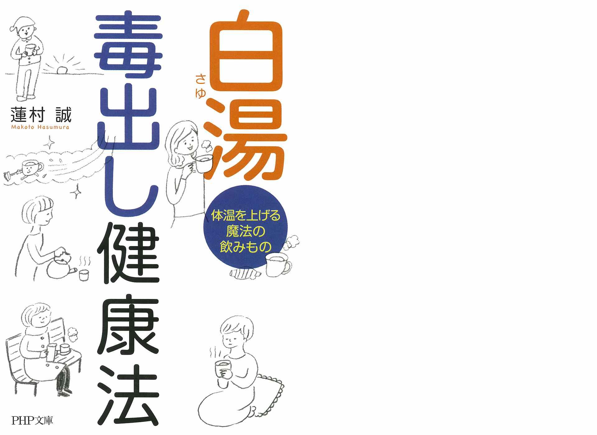
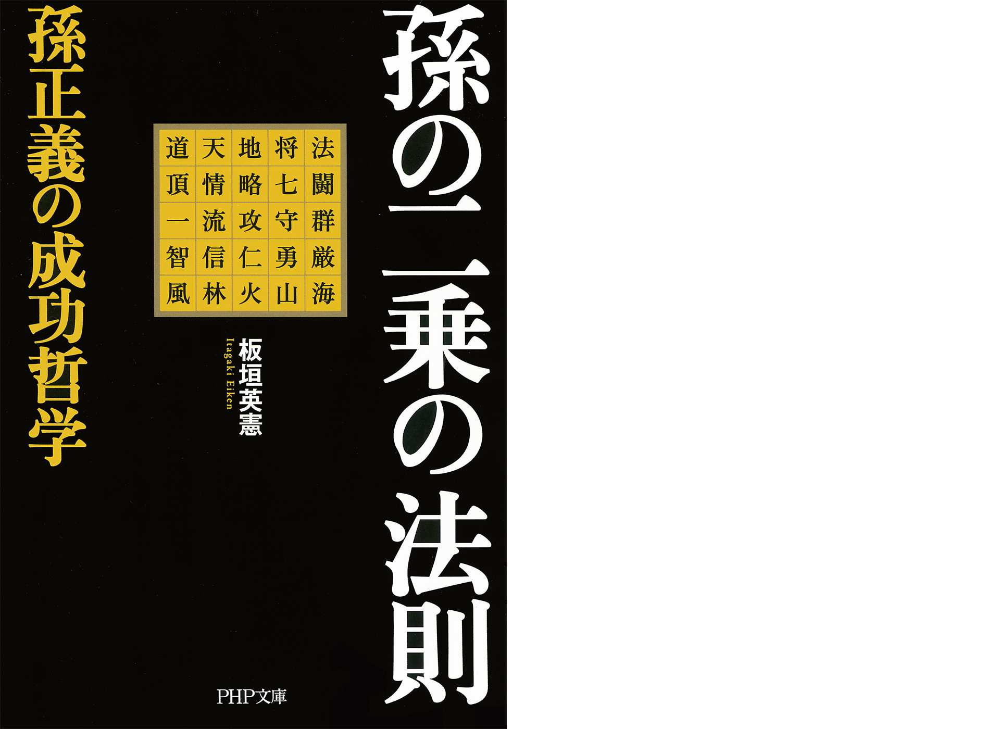

| PHP研究所電子書籍ベスト100 2015上半期 PHP電子 | |
| PHP研究所 | |
| 株式会社PHP研究所 (2015) | |
PHP研究所電子書籍ベスト100
2015上半期
PHP研究所 編
はじめに
はじめに、この電子書籍にご興味を持っていただき誠にありがとうございます。
突然ですが、私はPHP研究所・電子事業部の通称「（こ）」と申します。
電子事業部に配属となり３年目で、ようやくこのページの執筆を担当させてもらえるようになりました。
どうぞ宜しくお願いします。
（私のデスク。出版社には見えない、としばしば言われます）
さて、この電子書籍は、2014年に発表した『PHP研究所電子書籍ベスト100 2014』がご好評をいただいたことを受けてリリースした最新ランキングです。
「最新の情報がほしい」「もっと早く知りたい」というご要望にお応えする形で、PHP研究所における2015年上半期（2015年1月～6月）の電子書籍売上ベスト100をご紹介するものといたしました。
2015年8月現在、PHP研究所の電子書籍配信タイトル数は5000点を超え、通年で新規タイトル2000点超を配信するペースで活動しています。コミックを除く文字中心の書籍を取扱う出版社の中でもトップクラスの配信数を誇ります。
タイトル数が多いので、しばしば他の出版社さんから、「PHP研究所はなぜこれだけの数の電子書籍をリリースすることができるのか？」と聞かれることがあります。その理由を私なりに考えてみました。
出版・編集というと、いわゆる職人の世界で、それぞれの専門分野に長けた方が活躍するイメージがあると思います。しかし、電子書籍の世界は必ずしもそうとは限りません。
仮に原稿が完成していたとしても、一冊の書籍を数ヶ月の期間を費やし何人もの協力を得て制作・販売する紙の世界とは異なり、電子は担当者一人とコンピュータ一台があれば一日で一冊の書籍を制作・販売できてしまう可能性のある世界だからです。
私も電子書籍の担当になるまでは、出版業界に対する一般的な先入観を持っていましたが、自分でデジタルコンテンツに触れてみて、そのスピード感に驚きました。
私たちPHP研究所・電子事業部の部員の仕事は電子書籍の制作・販売"だけ"にこだわりませんし、一般的な制作担当・販売担当というレガシーな仕事の分担をしていません。専門的な知識や技術を幅広く習得し、一人と一台で制販どちらの成果もあげることをモットーに取り組んでいます。その積み重ねが、個々人のレベルを高め、配信点数の増加・品質の向上につながっているのだと考えています。
この部署の一員である私自身も、現部署でデジタルコンテンツ担当になって、こうして原稿を書くこと、データベースを管理すること、ネットプロモーション策を練ること、著者の方とお会いすること、技術書で勉強すること......などなど、書ききれないくらい幅広く担当させていただいています。ついていくのが大変ですが、常に新しいことを学べるので、毎日成長している実感があります。
そんな私たちが精魂を込めて制作した5000タイトル超の電子書籍には、人気の新刊、1960年代刊の不朽のミリオンセラー、電子書籍限定作品（デジタルファースト）等、古今東西の様々なジャンルが登場します。
ぜひとも、PHP研究所の2015年上半期（2015年1月～6月）電子書籍ランキングを通し、電子書籍選びの一助にしてください。そして興味を持たれた作品をご一読いただければうれしいかぎりです。
お読み頂いていた電子書籍のなかには、私（こ）が制作したものもあるかもしれません......ぜひとも宜しくお願いします。
（「一番を目指したい」そんな気持ちの表れを込めたつもりでしたが、ちょっと力が入りすぎですね。失礼しました 汗）
2015年8月3日 PHP研究所 電子事業部
【本電子書籍について】
○本電子書籍に掲載したランキングは2015年1月から2015年6月までのPHP研究所の全電子書籍販売ストアの売上を集計したものです。
○各ページ末の「電子書籍の詳細ページはこちら 」の「こちら 」の文字をタップまたはクリックすると、書籍の商品詳細ページに遷移します。
○本電子書籍中で一部、漢字が簡略体で表示される場合があります。
2015年 PHP研究所電子書籍
第1位
道をひらく
松下幸之助

1968年刊
運命を切りひらくために。日々を新鮮な心で迎えるために――。人生への深い洞察をもとに綴った短編随筆集。40年以上にわたって読み継がれる、発行450万部超のロングセラー。
昭和43年の発刊以来、累計400万部を超え、いまなお読み継がれる驚異のロングセラー『道をひらく』。
本書は、松下幸之助が自分の体験と人生に対する深い洞察をもとに綴った短編随想集である。
これまで、どれほど多くの人が本書に勇気づけられ、また成功への指針としてきたことか。
この本には、時代を超えて生き続ける不変の真理があるからである。
もし失敗して落ち込んでいるのならば、「自信を失ったときに」「困難にぶつかったときに」「運命を切りひらくために」の項が、きっと立ち直る勇気を与えてくれるだろう。
もし、経営で行き詰まってしまったら、「仕事をより向上させるために」「事業をよりよく伸ばすために」「みずから決断を下すときに」の項が、解決の方途を示してくれるはずである。
業の成功者であり、それ以上に人生の成功者である松下幸之助であればこそ、その言葉には千鈞の重みがある。
あらゆる年代、職種の人に役立つ、永遠の座右の書である。
電子書籍の詳細ページはこちら
2015年 PHP研究所電子書籍
第2位
自分を受け入れた瞬間、何かが起こる！「引き寄せスパイラル」の法則（大和出版）
奥平亜美衣
2014年刊
ベストセラー『「引き寄せ」の教科書』のカリスマブロガーが、「あること」をするだけで、次々と願いごとが叶ってしまう仕組みを初公開！
「信じられないほど道が開けた！」という声続々。
ベストセラー『「引き寄せ」の教科書』のカリスマブロガー。「現状に不満をもちだながらもどこかであきらめてしまっている」「いいことがなければ幸せになれないと思っている」といった人。また、「一生ものの幸せと豊かさを手に入れたい」といった願いを持っているものの、なかなか現実ではそうならない人は多い。
しかし、「引き寄せスパイラル」の状態に入ると、頭で思い描いた望みが、難なく、次々と叶うようになっていく――。
そこで、本書では、これまで語られてこなかった、本当の「引き寄せ」。
その驚くべき仕組みと方法を初公開。
すでに「引き寄せ」を知っている方も、知らない方も、本書をお読みいただき、ぜひ、この素晴らしい世界を体感してください。
電子書籍の詳細ページはこちら
2015年 PHP研究所電子書籍
第3位
海外経験ゼロでも仕事が忙しくても「英語は1年」でマスターできる
三木雄信
2014年刊
TOEIC500点レベルから、わずか1年で買収交渉ができるまでに急成長！元ソフトバンク社長室長が、最短最速の英語勉強法を伝授！
学生時代、英会話が大の苦手だったという著者。
ところが、ソフトバンクに転職するやいなや、孫正義社長の秘書として海外出張への同行を命じられ、そこで英語ができないことがものの見事に露呈してしまう。
唖然とする孫社長の表情を見て、「このままではクビになる」と感じた著者は一念発起し、「流暢に話せるわけではないのに、ネイティブとの交渉で絶対負けない」孫社長の英語を参考に勉強をスタート。
その後、仕事に必要な英語だけを集中的に学習する独自のやり方で、「通訳なしで交渉ができるレベル」の英語をわずか１年でマスターした（しかも、孫正義社長の下で忙しく働きながら）。
本書では、自らの実体験をもとに編み出した「最短最速の英語勉強法」を開陳。
著者の勉強法は、一見ユニークだが、誰もが実践できるもの。
英語学習に対する「不安」が「希望」に変わる１冊。
電子書籍の詳細ページはこちら
2015年 PHP研究所電子書籍
第4位
一生お金に困らない生き方
心屋仁之助
2015年刊
お金は、「労働の対価」ではなく、自分自身の「存在給」として受け取るもの。お金に対するイメージを変えて、豊かになる方法を紹介。
お金に対する思いって、なんかヤらしい。がめつい。品がない......。でも、ほしい。でも、あんまりほしがってるって知られたくない。でも、どうすればちゃんと「必要なお金が入ってくる人」になれるでしょうか？
本書は、19年間会社員をやってきて、今はカウンセラーとして、自由と豊かさを得た著者がはじめて書いたお金の本。
以前はお金に苦労したこともある著者が、ひょんなことから見つけた、「お金に困らなくなる方法」について書かれています。
損をすれば、豊かさが返ってくる。お金も空気も愛情も、出せば回る。これが宇宙の法則です。お金をちゃんと使って、世の中にめぐらせる。自分が好きなものに使って、自分を喜ばせる。お金をケチらない。お金の流れを止めない...。気づいたら、頑張ってないのにお金がいっぱい入って、困らない人になっていた。そんな人になれるはずです。
電子書籍の詳細ページはこちら
2015年 PHP研究所電子書籍
第5位
「好きなこと」だけして生きていく。
 ガマンが人生を閉じ込める
ガマンが人生を閉じ込める
心屋仁之助
2014年刊
「一番嫌なことをやってみる」「楽をするほどうまくいく」など、好きなことをしてお金も入ってくる方法を話題のカウンセラーが解説。
好きなことだけをして生きていく。
「そんなことができたら幸せだなあ。でも、それができるのは、才能や能力がある人だけ。自分には無理」と思っていませんか？でも、本当は誰でもその人にあった好きなことをして、もっと自由に生きることが可能なのです。もちろん、お金に困ることもありません。
本書では、19年間会社員をやってきて、今はカウンセラーとして、自由と豊かさを得た著者が、誰もがその人なりに「好きなことだけをして生きていく」方法を紹介します。
「"努力＝報われる"ではない」「人生は、本当は上りのエスカレーター」「好きなように生きることに罪悪感を感じる必要はない」「やりたくないことをやめる」「人に迷惑をかけたり、嫌われることを恐れない」「好きなことをして生きるためには、"一番嫌なあること"をする」など、実践できる具体的な方法がつまっています。
あなたも、ガマンがいっぱいの人生から解放されませんか？
電子書籍の詳細ページはこちら
2015年 PHP研究所電子書籍
第6位
「話す」「書く」「聞く」能力が仕事を変える！伝える力
池上彰
2007年刊
わかっているつもり、では伝わりません。伝えるために話すこと、書くこと、聞くことを徹底して考えたジャーナリストの究極の方法とは？
商談や会議、プレゼンテーションや企画書・報告書の作成、電話での交渉、メールでの連絡――ビジネスの現場で行なわれている日常業務。
仕事の「できる」「できない」を左右するのは、意外とこうした基礎をしっかりやるかどうか。
それには上司や部下、顧客とのコミュニケーションをいかに円滑にするかが鍵を握る。
本書は「話す」「書く」「聞く」の3つの能力の磨き方を紹介。
これができると自ずと成績・業績に結びつくもの。長年NHKの『週刊こどもニュース』のお父さん役を務めてきた著者（現在はフリージャーナリストとして独立）ならではの極意を伝授する。
伝えることの難しさを身をもって経験しているだけに、ビジネスの現場でも十分応用が効く智恵が盛りだくさんである。
相手を惹きつける、ビジネス文書を書く、文章力をアップさせるなど、本書の秘訣を習得すれば、仕事が楽しく、やりやすくなること間違いなしだ。
電子書籍の詳細ページはこちら
2015年 PHP研究所電子書籍
第7位
驚くほど話せるようになる！英会話「1日1パターン」レッスン
デイビッド・セイン
2011年刊
英語で暗記すべきは単語ではなく「文型＝パターン」！これさえ覚えれば大抵のことは英語で表現できるようになるという50文型を厳選紹介！
英語が話せるようになるには、何百、何千という単語・フレーズを覚えなければいけない......そんなふうに思っていませんか？ 実はもっと手っ取り早い方法があるのです。
それが、「活用範囲の広い基本パターン（文型）の使い回し」です。たとえば、
Ｉ'd like～（～が欲しいのですが）というパターンを一つ覚えるだけで、Ｉ'd like a menu＝メニューをください Ｉ'd like fish＝（機内食で魚か肉か聞かれたときに）魚料理でお願いします Ｉ'd like a discount＝割引をしてほしいのですがといったように、何通りもの表現ができるようになります。
本書では、実際にネイティブが日常会話でよく使う、使い勝手のいい「頻出パターン」を著者が厳選紹介（しかもすべて中学英語レベル）。
そのため、収録パターン数は50と決して多くありませんが、これだけでもかなりのことを英語で言えるようになります。
さらに、「反射的にパッと口から出てくる」ようにするためのトレーニングも収録。
これ1冊で、「中学で習った英語」が「とっさに使える英語」に変わること間違いなし！
電子書籍の詳細ページはこちら
2015年 PHP研究所電子書籍
第8位
東大生が書いた世界一やさしい株の教科書
東京大学株式投資クラブAgents
2011年刊
東大生が教えたら、難しい株式投資もこんなにわかりやすい！個性豊かな先生陣と、初心者生徒3人と一緒に、楽しく学べる株の教科書。
東大生が書いたら、難しい株式投資がここまでわかりやすくなりました！「株に興味はあるけど、入門書で挫折した」「文章が堅苦しくて読み進められない」......本書は、そんな人にオススメの株式投資入門講義です。
これ以上ないくらいにやさしいこの本で、遊太くん、勤くん、彩ちゃんの3人の生徒と一緒に株を学んでいきましょう。
教えてくれる先生方は、ちょっと陰のある金七先生、セクシーな紀香先生、筋肉マッチョな株レラ先生と、超個性派ぞろい。
株の基礎からチャートの読み方、指標の使い方、株価に影響を与えるニュースの見方や新聞の読み方まで、必要な知識を楽しく身に付けることができます。
さらに、リアルな銘柄選択、投資クイズなど、ずっと役立つ・使える情報が満載。
この一冊を準備すれば、今日からあなたも個人投資家！
電子書籍の詳細ページはこちら
2015年 PHP研究所電子書籍
第9位
なぜローカル経済から日本は甦るのか
GとLの経済成長戦略
冨山和彦
2014年刊
アベノミクス成功のカギは、ローカル経済にあり！グローバル経済も分析しながら、今後の日本が成長していくヒントを読み解いていく。
グローバルとローカルの経済圏を区別せずにその施策を考えていたため、格差問題が生じ、日本経済は停滞してしまっていた。
グローバル企業がいくら稼いでも、日本経済全体の占有率は3割にすぎない。雇用にいたっては、2割程度である。残り7割のローカル経済圏が復活してこそ、初めて成長軌道に乗ることができる。内容例を挙げると、「GとL」を理解すれば格差問題の実相も見えてくる
日本のグローバルプレーヤーが長期的に後退してきた本当の理由
大企業と中小企業ではなくグローバルとローカルで分ける
ほとんどの産業がローカル経済圏のプレーヤー
「コト」消費の時代の到来で「GもLも」戦略に追い風が吹き始めた等々。
そして、今、労働市場で人類史上発の巨大なパラダイムシフトが起きている、と著者は主張する。GDPや企業の売上が緩やかに減少していく中で、極度の人手不足が起こっているのだ。日本経済復活へのシナリオを明らかにする一冊。
電子書籍の詳細ページはこちら
2015年 PHP研究所電子書籍
第10位
2035年の世界
高城剛
2014年刊
とてつもない変化は、世界のどこかでもう始まっている。今から20年後の「2035年」......、それは思ったほど遠くない未来である。
とてつもない変化は、世界のどこかでもう始まっている。今から20年後の「2035年」......、それは思ったほど遠くない未来である。
本書は、クリエイター、あるいはDJとして、移動しながら世界で仕事をしている著者が、各国で最先端の研究機関、研究者、学者、技術者らと出会い、導き出した未来を描いた一冊。
「死なない人間」「デザインされる子ども」「人工合成技術」「オミックス医療」「資本主義3.0」「空飛ぶ自動車」「未来の音楽」「ペタバイト」「リキッド化」「自分検索」......。
一見、絵空事にも思えるキーワードの数々。しかし、それらは既に世界のいたるところで現実化、実用化に向けて動き始めている。
著者は、貧富の差という二極化だけでなく、「生死」に関しても二極化される可能性を示唆している。では、私たちは20年後に向けて、今、何をすべきか。そのヒントは本書に収録した「100のキーワード」の中にある。
電子書籍の詳細ページはこちら
2015年 PHP研究所電子書籍
第11位
"独り身"の呪い（大和出版）
男をドン引きさせてしまうのにはワケがある！
ゴマブッ子
2014年刊
一生幸せになんかなれないわ!なんだかんだ言ってやっぱり結婚したいあんたたちへ、今すぐ呪いを解く魔法を教えます。
「こいつ、めんどくさい」「もう、一緒にいるのに疲れた」...お言葉ですが、こんなふうに思われる女のままでは、一生幸せになんかなれないわ!
なんだかんだ言ってやっぱり結婚したいあんたたちへ。
「モテないゲイ日本代表」のゴマブッ子と「元・負け犬の教祖」のT子が捧げる、最強最高の恋愛指南書。
電子書籍の詳細ページはこちら
2015年 PHP研究所電子書籍
第12位
他人を攻撃せずにはいられない人
片田珠美
2013年刊
罵声を浴びせる人から、「いい人の仮面」を被り、密かに相手を陥れる人までさまざまなケースをとりあげ、その心理を精神科医が分析する。
暴言を吐く、支配したがる、けなして自信を失わせる、優しいようで水面下で工作している、一見目立たない人を含めて、あなたの周りにはとんでもない人が隠れているかもしれない。
本書では、精神科医として「ターゲット」にされて、痛い目に遭った患者たちから聞いた、人を陥れる「攻撃欲の強い人」を事例で紹介。
ターゲットの心をどんなふうに壊していくのか、その手法を取り上げて分析する。
「攻撃欲の強い人」とはどんな人か。多くの場合、攻撃される側は、ターゲットが抵抗できないが、それは一体なぜなのか。何のためにそんなことをするのか。結果どんな影響を及ぼすのか。はたして、攻撃欲の強い人と、どう向き合い対処すべきか。本書で明らかにする。自分のために、人生を台無しにされないために――職場や家族に潜む「害になる人」の精神構造を知る！
電子書籍の詳細ページはこちら
2015年 PHP研究所電子書籍
第13位
どうせ死ぬのになぜ生きるのか
晴れやかな日々を送るための仏教心理学講義
名越康文
2014年刊
精神科医の結論。日々の不安の根底にある根本的な疑問を解決する答えは、仏教の教えにある！誰でも実践できる"行（ぎょう）"が人生を変える。
なぜ私たちは悩みや不安からいつまでたっても解放されないのか。それは「どうせ死ぬのになぜ生きるのか」という問いに答えられないために、一つひとつの悩みの根底にある「漠然とした不安」が解消されないからではないか。
精神科医である著者が、この問いに初めて向き合ったのは10歳のとき。それから40年経った今、この問いに実践レベルで答えが出せるのは仏教しかないと著者は確信し、日常の中でその教えを実践している。何も出家などしなくとも、誰でも実践できる「行」や「方便」によって、曇りない心で真実をつかみ、毎日を明るく生きられるようになるのである。
「行」とは日々の行動習慣の一種だが、「背筋を伸ばす」「眼鏡を拭く」「朝、シャワーを浴びる」といったことでも「行」になる。
「方便」はごく簡単に言えば「困っている人に親切にする」ということであり、人間関係のつまらない行き違いをなくすためにも必要な姿勢である。
さらに瞑想のやり方やお寺の活用法、怒りを抑える方法なども伝授。満を持して放つ「仏教心理学」のすすめ。
電子書籍の詳細ページはこちら
2015年 PHP研究所電子書籍
第14位
東大首席弁護士が教える超速「7回読み」勉強法
山口真由
2014年刊
東大法学部を首席で卒業し、現在弁護士として活躍する著者が、ライバルに差をつけるための本当に身につく勉強のハウツーを紹介。
東大を首席で卒業するようなトップエリートは、いったいどんな勉強をしてきたのか――。
一般の人とはもともとの頭の作りが違うのか、努力の量が違うのか、みんなが知らない暗記のコツを知っているのか。東大法学部を首席で卒業し、官僚を経て弁護士、テレビコメンテーターなどとして活躍する著者が、どのような勉強法を実践してきたのか解説。
「勉強は決して楽しいものではない」と著者は言い切ります。知識を学び、自分のものにするには「努力」が必要です。勉強という作業は極めて地味で、時には退屈、多くの場合は苦痛でさえあるのです。そんな作業を継続してこられた大きな要因は、自分に合った勉強法を確立できていたから。勉強法さえ確立できれば、知識の獲得は断然楽になります。
本書では、その具体的な勉強法として、誰でも実践可能な「本を7回読む」というシンプルな方法を中心に、著者が編み出した勉強のコツをたっぷりと紹介しています。
電子書籍の詳細ページはこちら
2015年 PHP研究所電子書籍
第15位
「アドラー心理学」で人生が劇的に変わる！「ブレない自分」のつくり方
深沢孝之/造事務所
2014年刊
『嫌われる勇気』等で注目の心理学者アルフレッド・アドラーの教えを、図解やイラストでわかりやすく解説。心に勇気を与える一冊。
"ありのままの自分"に自信が持てない、他人のすることが気になってイラつく、人と比べて劣等感を抱いてしまう、同僚の活躍をねたましく思う、子どもが言うことをきかない、自分は孤独なのではないかと思う、自分にとっての幸せがわからない......人生に悩みはつきもの。
しかし、ただ悶々と悩み続けているだけでは、「悩みを課題から逃げる言い訳に使っているに過ぎない」とアドラー心理学ではとらえます。では、いまある悩みからいかに抜け出すか。本書では、アドラーの教えを図解とともにやさしく解説。
問われているのは"劣等感の扱い方"である。楽観的であれ。今現在の"ここ"だけを見るのだ。性格は決められたのではない。自分で決めている――etc.大切なのは、いま、この瞬間から、あなた自身が幸せになる道を選択すること。強く、やさしく、そしてきびしく示されたアドラーの答えは、あなたの人生を劇的に変えてくれるでしょう。
電子書籍の詳細ページはこちら
2015年 PHP研究所電子書籍
第16位
「食べない」健康法
石原結實
2012年刊
「食べないと健康に悪い」はもう古い！いまは「食べないから健康」が常識。医師やスポーツ選手が実践する超少食健康生活を紹介する。
現代人の食べすぎが病気を増やしている！ ガン、脳梗塞、心筋梗塞、糖尿病、通風などの病気は、1日2食以下の「少食生活」で改善できる。
本書は、断食が体に良い根拠から、その具体的な実践法、「飲酒はOK？」「いつまで続けるべき？」などの素朴な疑問までを解説。永年、断食指導を行なってきた著者が明かす「少食健康本」の集大成。「健康のために」と1日3回食べている方は必読！石原式「健康食」
（朝）下記のどれか
○食べない。
○お茶に梅干し。
○黒砂糖入り生姜紅茶1～2杯。
○人参･リンゴジュース1～2杯。
○生姜紅茶1～2杯と人参・リンゴジュース1～2杯。
（昼）下記のどれか
○ネギと七味唐辛子をしっかりふりかけたそば（とろろ、ワカメ、ざる）。
○ネギと七味唐辛子をしっかりふりかけた具だくさんのうどん。
○タバスコをふりかけたピザやパスタ。
・○ごはんや弁当ならよくかみ、腹八分以下に。
（夕）○アルコールを含め、何を食べても可。
電子書籍の詳細ページはこちら
2015年 PHP研究所電子書籍
第17位
自分を変える技術
「がんばっても給料同じ」なんてウソ！
おちまさと
2013年刊
分かっているのに、なぜ怠けてしまうのか？「やる気を出したい」「続けたい」と思った時に読み返したいヒントがここにあります。
「今日から変わろう！」という固い決意はなぜ３日間しか続かないのか？
多くの人を悩ますこの問題に、ソリューションを提供するのがこの作品です。厳しい環境からキャリアを開始して、夢や目標を達成し続け進化を止めない著者が、そんな自身の経験から、あなたの一度きりの人生を、もっと毎日を楽しくするためのコツを伝えます。
アメーバのような変化力が求められる現代。柔軟に自分自信を「進化」させて行かなければ、成功はおろか現状維持すらままなりません。そんな時にあなたを邪魔する「怠ける心」や「がんばたってムダ」の気持ちは、きっと最後まで読んで頂ければ消えていると思います。「やる気を出したい」「続けたい」と思った時に読み返したいヒントがここにあります。
電子書籍の詳細ページはこちら
2015年 PHP研究所電子書籍
第18位
日本史の謎は「地形」で解ける
竹村公太郎
2013年刊
なぜ頼朝は狭く小さな鎌倉に幕府を開いたか、なぜ信長は比叡山を焼き討ちしたか......日本史の謎を「地形」という切り口から解き明かす！
養老孟司氏、推薦！
荒俣宏氏、推薦！河川行政に長年携わり、日本全国の「地形」を熟知する著者が、歴史の専門家にはない独自の視点（＝インフラからの視点）で日本史のさまざまな謎を解き明かしていく。
なぜ京都が都になったか──都市繁栄の絶対条件元寇が失敗に終わった本当の理由とは何か──日本の危機を救った「泥の土地」なぜ信長は比叡山延暦寺を焼き討ちしたか──地形が示すその本当の理由関ヶ原勝利後、なぜ家康はすぐ江戸に戻ったか──巨大な敵とのもう一つの戦い赤穂浪士の討ち入りはなぜ成功したか──徳川幕府百年の復讐なぜ吉原遊郭は移転したのか──ある江戸治水物語なぜ江戸無血開城が実現したか──
船が形成した日本人の一体感「地形」を見直すと、まったく新しい歴史が見えてくる！歴史に対する固定観念がひっくり返る知的興奮と、ミステリーの謎解きのような快感を同時に味わえる1冊。
電子書籍の詳細ページはこちら
2015年 PHP研究所電子書籍
第19位
「相対性理論」を楽しむ本
よくわかるアインシュタインの不思議な世界
佐藤勝彦
1998年刊
たった10時間で『相対性理論』が理解できる！「遅れる時間」「双子のパラドックス」などのテーマごとに、楽しく、わかりやすく解説。
ホーキング博士の難解な宇宙論がブームになったことは記憶に新しい。そんな難解な理論の代表格が、ホーキング理論の基礎でもあるアインシュタインの「相対性理論」ではないだろうか。
実は、相対性理論は彼がいなかったら成立しなかったというわけではない。その発表とともに世界の学者たちが「ああ、そうだったのか」と、直ちに理解したのである。
別の見方をすれば、相対性理論は天才しかわからないものではなく、素直に考えればなるほどそうだったのかと誰でも思えるものなのだ。
本書は、従来の解説書と違い、数式をできるだけ使わず、イラストや図解を多用することで、スラスラと理解できる入門書。あなたをアインシュタインの不思議で謎に満ちた世界へと誘います。
全体を10章に分け、「アインシュタインの生涯」「遅れる時間の不思議」「双子のパラドックス」などのテーマごとに解説。楽しく読み進むだけで理解できるように構成された画期的な一冊。
電子書籍の詳細ページはこちら
2015年 PHP研究所電子書籍
第20位
「日本沈没」から「韓国沈没」へ 【Voice S】
室谷克実
2014年刊
一時期、「日本企業は韓国企業に学べ」と報道されていたのは、いったい何だったのか。稀代の韓国評論で知られる著者による最新「沈没」事情。
いまや中国からもアメリカからも見捨てられはじめ、徐々に世界から「置いてきぼりになる韓国」。
景気を支えるはずのサムスン、現代自動車グループにも精細がない。一時期、「日本企業は韓国企業に学べ」と報道されていたのは、いったい何だったのか。稀代の韓国評論で知られる著者による最新「沈没」事情。
本コンテンツは月刊誌『Voice』2014年11月号掲載記事を電子化したものです。
電子書籍の詳細ページはこちら
2015年 PHP研究所電子書籍
第21位
斎藤一人 天が味方する「引き寄せの法則」
柴村恵美子
2014年刊
人間関係が良好で、お金も集まる人には共通点がある。日本一の高額納税者・斎藤一人氏から教わった人間関係が改善しお金が自由に手に入る法。
人間関係がとても良好でお金に困らない人、何をやってもうまくいく人には共通点があります。
それはいつも「エネルギーに満ち溢れている」ということ。いいエネルギーを発する人には、いい人が集まってきます。いい人が集まってくると、いいことが自然に引き寄せられれるのです。
本書は斎藤一人氏の一番弟子が明かす、いつも「エネルギーに満ち溢れている人」になる方法。いつも「エネルギーに満ち溢れている人」になるには、いつも上機嫌でいること。いつも上機嫌でいる人は、いつも楽しいを考えています。「あんなことできたら楽しいなあ」「こんなことできたらみんな喜ぶだろうな」。楽しいことを考える人には、どんどん人が集まってきます。人が集まるところにお金も運も引き寄せられます。人生を変えたいのになかなか変わらないと思っているあなたにぜひ読んでほしい一冊。
電子書籍の詳細ページはこちら
2015年 PHP研究所電子書籍
第22位
保育士おとーちゃんの「叱らなくていい子育て」
須賀義一
2015年刊
お母さんたちに大人気のブログ『保育士おとーちゃんの育児日記』の著者が、子育てを単純に、楽しく変えるための具体的な方法を紹介。
「どんな育児書より一番役立つ」と、子育てに悩むパパとママが絶賛！毎月30万以上読まれる大人気ブログが電子書籍化です！
子育てで悩まない人は、まずいないでしょう。一生懸命に子どもと向き合い、子どものためを思って叱っているのに、なかなかうまくいかない、子どもが言うことを聞いてくれない......。
でも、そんな悩みを解消する方法があります！本書は、こどもが「叱られる行動」をとるメカニズムを解明しつつ、子どもが積み木を投げてしまうようなとき、友だちのおもちゃをとってしまう時など、さまざまなケースを取り上げ、すぐに使えるヒントをたくさん紹介してみました。
親も子もみんなが幸せになれる「叱らなくていい子育て」、始めてみませんか？
電子書籍の詳細ページはこちら
2015年 PHP研究所電子書籍
第23位
100％自分原因説で大好きな人に世界一愛される
秋山まりあ
2014年刊
人気モデルや女優に絶大な支持を得ている「100％自分原因説」の恋愛版。誰もが理想の相手に出逢える方法を伝授します。
恋愛下手はもう卒業！究極の愛され体質になる方法がこの１冊でわかります！
あなたの周りには、ふつうの女の子なのになぜかモテる子がいませんか？「私には魅力がないのかしら・・・」と思っている方もいるかもしれません。
でも、「恋愛成就して幸せになりたい！」という気持ちがあれば、大丈夫。
「100％自分原因説」の考え方をとり入れれば、不思議なくらい、すごいスピードで、あなたの理想が現実になり、恋愛成就が叶います！「恋愛だけがうまくいかない」「同じパターンでいつも破局してしまう」といったお悩みにもワークとともに解決法をご紹介します。
ほんの少し自分の意識（言葉）を変えてみる。驚くほど、現実が動き始めます。まわりでいいこと（「友人に彼ができた！」など）が起こったら、あなたにもいいことが近づいているサイン。ハッピーな気持ちで過ごしていれば、ステキなことが起こり始めます！
電子書籍の詳細ページはこちら
2015年 PHP研究所電子書籍
第24位
「量子論」を楽しむ本
ミクロの世界から宇宙まで最先端物理学が図解でわかる！
佐藤勝彦
2000年刊
素粒子のしくみから宇宙創生までを解明する鍵となる物理法則「量子論」。本書ではそのポイントを平易な文章と図解を駆使して徹底解説。
とても興味があるけれど、むずかしくて理解できない......そんな代表的なものが、アインシュタインが提唱した「相対性理論」だろう。
ところが、現代物理学にはその相対性理論よりも難しく、奇妙で、なおかつとても面白い理論がある。
それが「量子論」。一番身近な例をあげると、最近はほとんどの人が持っている携帯電話やパソコンのもっとも重要な部品ともいえる半導体チップの中を支配している法則である。
こればかりではなく、素粒子などのミクロの世界に適用されるもので、人などの遺伝子など生物の構造や進化、そしてマクロの極限である宇宙の創生までを解明するとされている。
本書は、その量子論のポイントが一目で理解できるように、図やイラストを多数使って初心者向けにわかりやすく解説した格好の入門書。最先端物理学の不思議な世界を手軽に味わうことができる。監修は宇宙物理学を世界的にリードしている東京大学の佐藤勝彦教授。
電子書籍の詳細ページはこちら
2015年 PHP研究所電子書籍
第25位
「対人関係療法」の精神科医が教える「怒り」がスーッと消える本（大和出版）
水島広子
2011年刊
「イライラしたくない」「怒りっぽい自分を変えたい」...。怒っている人は「困っている人」、うるさいアドバイスは「相手の悲鳴」、ケンカするのは「役割期待」がずれただけ。
「ムカムカを手放したい」「ついキレてしまう」「つまらないことでイライラしたくない」「怒りっぽい自分をなんとかしたい」あなたへ。
「怒り」はなぜ起きるのか。どうすれば、イライラを手放せるのか。
感情に振り回されない人になるには、どうすればいいのか。
対人関係療法の第一人者が、「怒り」のメカニズムとその対処法を初公開します。
「怒り」の原因は３種類ある、怒っている人は単に「困っている人」、うるさいアドバイスは「相手の悲鳴」、ケンカするのは「役割期待」がずれただけ......。
わかりにくい感情のカラクリをすっきり明快に解説し、今すぐ心が晴れるヒント満載です。
「イラストもかわいくて、バツグンにわかりやすいです！」「具体的な方法がとても役に立ちました」「何度も読んで、バイブルにしています」......喜びの声続々。アンガーマネジメント本の決定版！
電子書籍の詳細ページはこちら
2015年 PHP研究所電子書籍
第26位
戦後リベラルの終焉
なぜ左翼は社会を変えられなかったのか
池田信夫
2015年刊
「敗者の戦後史」から逆照射すれば、未来の日本への道筋が見えてくる。日本を「普通の国」へと変える論点がわかる、刺激的な論考！
本書は戦後の歴史をたどりつつ、歴史を変えることのできなかったリベラルな知識人の挫折の原因をさぐる「敗者の戦後史」である（「はじめに」より）。
全面講和から安保反対、反原発運動に至るまで、日本の左翼は理想主義的なスローガンに終始し、保守陣営への対案を示してこなかった。
2014年の朝日新聞の大誤報は、そんな「戦後リベラル」たちの終焉を示していたと言えるだろう。
戦後70年を経たいま、「革新」という幻想はこれからどこへ行くのか。
「敗者の戦後史」から逆照射すれば、未来の日本への道筋が見えてくる。日本を「普通の国」へと変える論点がわかる、刺激的な論考！
電子書籍の詳細ページはこちら
2015年 PHP研究所電子書籍
第27位
［新訳］留魂録
吉田松陰の「死生観」
松浦光修
2011年刊
獄中で執筆した遺書と、彼の死生観を表わした手紙を新訳で紹介。死ぬまで"学び"の姿勢を崩さなかった吉田松陰の生きざまを学ぶ。
幕末の激動期、短い生涯を激しく燃やした吉田松陰。その情熱は周囲を動かし、高杉晋作や久坂玄瑞など、維新の中心となる人物を生み出す。
本書は、松陰が、獄舎で処刑される前日の夕刻まで、自身の思いを発信し続けた『留魂録』を現代訳し、解説。さらに、『留魂録』以前の手紙や論文の中からも「死生観」をあらわした史料を選び加えた。
また、一番弟子ともいえる金子重之助、松陰の処刑後も自らの志を貫き維新を迎えた野村和作に注目し、松陰との関わりを著した。死を恐れることなく、つねに前を向きつつ、死によって、みずからの命が断ち切られるまで、"誠"の心のもとに"私"を"更新" してやまなかった松陰の「死生観」を学ぶ。
電子書籍の詳細ページはこちら
2015年 PHP研究所電子書籍
第28位
小さなことに左右されない「本当の自信」を手に入れる９つのステップ（大和出版）
水島広子
2013年刊
あなたに贈る、水島式「自己肯定感」の高め方。不思議と「何があっても、大丈夫」と思えてくる！
「何をやっても満たされない」「ダメな自分がイヤ」「他人の目が気になる」「すぐに凹んでしまう」「いつもあきらめてしまう」......そんなあなたに贈る、水島式「自己肯定感」の高め方。
「大事なのは『ＤＯの自信』ではなく、『ＢＥの自信』をつけること」「『するべき』ではなく『したい』で動く」「『自信』を失わない人づき合いをする」――対人関係療法の精神科医が、どんなときにも折れない「本当の自信」を手に入れる方法を、様々な例を扱いながら丁寧に解説。
不思議と「何があっても、大丈夫」と思えてくる！（著者紹介）精神科医、元衆議院議員。対人関係療法専門クリニック院長アティテューディナル・ヒーリング・ジャパン(AHJ)代表「対人関係療法」の日本における第一人者。『「怒り」がスーッと消える本』『身近な人の「攻撃」がスーッとなくなる本』（大和出版）、『女子の人間関係』（サンクチュアリ出版）など著書多数。
電子書籍の詳細ページはこちら
2015年 PHP研究所電子書籍
第29位
人と組織の問題を劇的に解決するU理論入門
中土井僚
2014年刊
人と組織を劇的に変える新手法「U理論」を、原著の訳者で企業変革の実績がある著者が、エピソードでわかりやすく解説。使える手法満載。
U理論はMITのオットー・シャーマー博士とマッキンゼーの知的連携により、世界トップクラスの革新的なリーダー約130人を調査した結果生まれたイノベーションの方法です。
誰もが頭をかかえる人と組織の問題に対しても、これまでとは全く異なるアプローチにより、対症療法に終わらない本質的な解決をもたらすことができます。
では、なぜそれができるかというと、我々が変革を起こそうとする際の「盲点」に気づいたからです。我々は革新的なリーダーが「何をどうやるか」に注目し、学んでもいますが、「どんな内面の状態から行動を起こすか」という行動の「源」には目を向けていなかったのです。
本書はその「行動の源」を転換すべくU字型の谷をくぐり抜け、イノベーションを起こすU理論の入門書。原書『U理論』訳者で、変革ファシリテーションの実績を豊富にもつ著者が、現場のエピソードを盛り込んで、U理論の本質と実践法をわかりやすく解説します。
電子書籍の詳細ページはこちら
2015年 PHP研究所電子書籍
第30位
霖雨
葉室麟
2014年刊
辛いことがあっても諦めてはいけない――豊後日田の儒学者・広瀬淡窓と弟・久兵衛が、困難に立ち向かっていくさまが胸に迫る長編小説。
天領の豊後日田で、私塾・咸宜園（かんぎえん）を主宰する広瀬淡窓（たんそう）と、家業を継いだ弟・久兵衛。画期的な教育方針を打ち出す淡窓へも、商人としてひたむきに生きる久兵衛へも、お上の執拗な嫌がらせが続く。大塩平八郎の乱が起きるなど、時代の大きなうねりの中で、権力の横暴に耐え、清冽な生き方を貫こうとする広瀬兄弟。
理不尽なことが身に降りかかろうとも、諦めず、凛として生きることの大切さを切々と訴えた歴史長編。
電子書籍の詳細ページはこちら
2015年 PHP研究所電子書籍
第31位
猿の部長
マーケティング戦略で世界を征服せよ！
竹内謙礼/青木寿幸
2014年刊
MBAを取得した滝川は、猿が経済を牛耳る世界に迷い込んでしまう。滝川はマーケティングノウハウを駆使して、猿社会から脱出できるのか?
アメリカの大学でＭＢＡを取得した滝川は、中堅総合商社・ライフ商事への入社直前、こっそり忍び込んだ猿ケ島での祭礼中に気を失ってしまう。目覚めるとそこは、経済の中枢を猿が牛耳り、人間をこき使うパラレルワールドだった!!
滝川は、ライフ商事の５つの事業部で、猿の部長たちにマーケティング戦略を提案し、年間利益10億円を目指すのだが......。「即日完売なのに、利益が出ない不動産事業部」「立地も広告も有利なのに、赤字続きの美容室事業部」「データ分析をしても、ヒット商品が出ないキッチン用品事業部」「徹底的なコスト削減をしても、利益ゼロの寝具事業部」「絶品スイーツなのに、全く売れないインターネット事業部」など、問題だらけの事業部を建て直すことはできるのか？
そして滝川は、元の世界に戻れるのか？マーケティング知識ゼロでもよくわかる実践的なマーケティング戦略が満載。最後まで目が離せない、笑いと恐怖の新感覚ビジネスノベル。
電子書籍の詳細ページはこちら
2015年 PHP研究所電子書籍
第32位
銀座Ｎo．１ホステス＆心理カウンセラーが教えるモテようとしなくてもモテる女になれる本（大和出版）
水希
2010年刊
不器用な女性たちの自信の持ち方から、雰囲気・行動・会話で彼をリラックスさせる秘訣までを大公開します。
人見知り、引っ込み思案、気が利かない......そんな私でも愛されるようになりました！モテたい！愛されたい！
けど、そのために男性に媚びたりするのは嫌だし、私には絶対無理。そもそも、人見知りだし、気が利かないし......。そんな不器用な女性だって、雰囲気・行動・会話のスキルをちょっと磨くだけで、自然と愛される人になれる！
うつ発症のどん底状態から、一躍、銀座Ｎｏ．１ホステス、心理カウンセラーになった著者だからこそ話せる、無理なく幸せになれるコツをぜーんぶ教えます
電子書籍の詳細ページはこちら
2015年 PHP研究所電子書籍
第33位
池上彰の「日本の教育」がよくわかる本
池上彰
2014年刊
いじめ、体罰、学級崩壊、ゆとり教育......日本の学校はどうなっている？教育制度の歴史から安倍政権の教育改革まで"池上流"親切解説！
安倍政権は「教育再生」を経済再生と並ぶ最重要課題に掲げ、「教育委員会制度の改正」「道徳の教科化」「6・3・3・4制の見直し」など、戦後教育の大転換といってもいいような改革を進めようとしている。
その善し悪しを見極めるためには、教育制度に関する基礎知識が欠かせない。そこで本書では、学校教育の歴史や現状を池上氏がわかりやすく解説。
「教育委員会」って何のためにあるの？「ゆとり教育で学力低下」とは言えない教員免許がなくても校長にはなれる公立の小中学校では50代の先生が最も多い子どもの6人に1人が「貧困」状態にある近い将来、「英語は小学校3年生から」になる？「東京教育大学」が存在しない意外な理由公立も中高一貫校が人気給食費「未納」問題はどうなった？学校で教わらない「日教組vs.文部省」の戦後史安倍政権の「教育再生」で何が変わるの？......etc.
目からウロコの池上流解説で、あなたも一気に「教育通」！「日本の将来を考えるうえで、『教育が重要だ』と考えている人は多いと思います。にもかかわらず、教育改革に注目が集まらないのは、ひとえに、『わかりにくいから』ではないでしょうか。たとえば、『教育委員会』という名前は聞いたことがあっても、何をするための組織なのか、誰が委員なのか、といったことを正しく理解している人は少ないでしょう。日本の教育に、どんな歴史があって、どんな問題を抱えているか、まるごと知ってもらおうと考えて、この本をまとめました」（本書「はじめに」より抜粋）
電子書籍の詳細ページはこちら
2015年 PHP研究所電子書籍
第34位
資本主義の正体
マルクスで読み解くグローバル経済の歴史
池田信夫
2014年刊
いま欧米でマルクス再評価が進んでいる。マルクスの「グローバリスト」「ラディカルな自由主義者」としての側面に光を当てる瞠目の書！
今、マルクスが新たな脚光を浴びつつある。なぜか。それはフランスの経済学者、トマ・ピケティが書いたベストセラー『21世紀の資本』が描く現代の「格差」の姿が、「資本主義がグローバル化するにつれて、富は一部の資本家に集中し、残りの人々は窮乏化する」としたマルクスの予言と重なるものであったからだ。
マルクスが思想が、再び説得力をもって甦ってきたのである。実は、マルクスが分配の平等を主張したことも、グローバル化に反対したこともなかった。それどころかマルクスは、国家が分配の平等を実現しようとする温情主義を否定し、グローバル資本主義が伝統的社会を破壊するダイナミズムを賞賛したのだ。
マルクスが未来社会として構想したのは「平等社会」ではなく「自由の国」だった――そう著者は喝破する。
では、彼が見通した資本主義とはいかなるものだったのか。そしてその現代的意味とは...？新たなマルクス像に光を当て、現代の諸問題を斬る意欲作！
電子書籍の詳細ページはこちら
2015年 PHP研究所電子書籍
第35位
40歳からは、小さいことにくよくよするな。
横山信治
2015年刊
40代からでも人は成功できる！40代で転職し、わずか4人だった会社を上場企業に成長させた著者が著す、自分の器をでっかくする方法。
著者は、営業成績全国最下位のダメ営業マンから、全国No1営業マンになるも、上司と衝突して40歳の時に左遷されてしまう。翌41歳から転職活動を開始し、2000年2月ソフトバンクファイナンスに転職、その後、日本発のモーゲージバンク・SBIモーゲージ株を設立。
当初4人でスタートした会社を、従業員250名、店舗数191店舗の上場企業へと成長させる。その著者が、ほんとうに使える成功の哲学を熱く語る。
電子書籍の詳細ページはこちら
2015年 PHP研究所電子書籍
第36位
インターネット的（PHP文庫）
糸井重里

2014年刊
インターネット的社会の未来像を示し、発刊から十余年を経て「予言の書」と称される名著。巻末に「続・インターネット的」付き！
どうやら、十年以上経って話題になっているらしい。じぶんで言うのもおかしいですが、読んだ方によれば「いまの時代が予見されている」そうです。「ぜんぶ、ここに書いてるじゃないか」なんていう声もいただきました。――糸井重里。
本書は、発刊から十年を経て、「まるで、予言の書！」と再評価の声が高まっている名著に、書き下ろしの「続・インターネット的」を加筆。
もとは、『ほぼ日刊イトイ新聞』を始めた当時の著者が、インターネット登場後の世界について考察したものだが、読む者は、ここ十年間に起きた変化の本質を、十年前のこの本によって知ることになるだろう。
また本書で綴られる言葉は、パソコンすらいらない、「消費者」なんていない、自分を他人にするゲーム、寝返り理論、消費のクリエイティブ、妥協の素晴らしさ......など、普遍的価値を持つ。糸井重里の予言的、そして普遍的なメッセージが詰まった一冊である。
電子書籍の詳細ページはこちら
2015年 PHP研究所電子書籍
第37位
5日間で「自分の考え」をつくる本
齋藤孝
2014年刊
「君はどう思う？」に、一瞬で答える力。ニュースの話題から本の感想まで、どんな話題でも「自分の考え」を言える人になる技を公開！
ある新聞記事を見せられ、「どう思う？」と尋ねられたとしたら。あなたは即座に気のきいた回答をする自信がありますか？
得意分野ならスラスラ答えられても、未知の分野なら言葉に詰まるという人が大半ではないでしょうか。しかし、「自分の考え」を持つべき現代人としては、対象が何であれ、とりあえず「何かを見聞きしたら何かを言える」という状態になりたいものです。
企業の採用等を見ても、「自分の考え」を持っている人が求められる傾向です。これからは言われたことをこなすだけの"思考停止"の社員ならいらないと言われかねません。逆に「自分の考え」をしっかり持っていれば、大きなチャンスが巡ってくるのです。「5日間」という限定が集中力を生む。本書を5日間の短期合宿メニューと思って実践すれば、「自分の考えを持っている人」と言われるようになるでしょう。
電子書籍の詳細ページはこちら
2015年 PHP研究所電子書籍
第38位
伝わる・揺さぶる！ 文章を書く
山田ズーニー
2001年刊
仕事で受験で恋愛で。小論文指導のエキスパートが、想いを伝え、相手を動かし、望んだ結果を出すための、本当に役立つ文章術を伝授。
お願い、お詫び、議事録など、私たちは日々、文章を書いている。どんな小さなメモにも、そこには読み手がいて、目指す結果がある。ではそのような場面で、どうしたら誤解されずに自分の思いを伝え、読み手の気持ちを動かすことができるのだろう？著者は長年、高校生の小論文指導に携わり、現在は糸井重里氏のサイト『ほぼ日刊イトイ新聞』で「大人のための小論文教室」を連載し人気を博している。
本書では「意見」「望む結果」「論点」「読み手」「自分の立場」「論拠」「根本思想」の七つの視点から、よい文章を書くための戦略をアドバイス。
「自分の意見が見つからないときは、小さな問いを立ててみる」「テーマと論点の違いを意識する」などのユニークなノウハウを、具体的な文例を紹介しながら、解説していく。単なる文章のテクニックをこえ、自分の頭で考え他者と関わることの痛みと歓びを問いかける、コミュニケーションの本質に迫る一冊である。
電子書籍の詳細ページはこちら
2015年 PHP研究所電子書籍
第39位
子どもの心のコーチング
一人で考え、一人でできる子の育て方
菅原裕子

2007年刊
問題点を引き出し、自ら解決させ成長を促すコーチング。その手法を「子育て」に応用し、未来志向の子どもを育てる、魔法の問い掛け術。
子どもをよい子に育てたい――。そう考えるあまり、声をかけ、世話をやきすぎて、依存心の強い、自立できない子どもが増えているといいます。しかし、子どもの将来を思うのなら、自分で考える力、周りの人とうまくやっていける本物の「生きる力」を身につけさせるのが親の務めです。
本書では、コーチングの技術を応用して、子どもの内なる能力を引き出し、子どもが自分で考え、答えを出せる子育て法を紹介します。「親は子どもをサポートし、才能を花開かせるコーチ」「子どもに教えたい、"愛すること""責任""人の役に立つ喜び"」「幸せ気分でするしつけ」「あなたの『きき耳』チェック」など、親がコーチとしてのあり方を学び、親自身が成長することによって、子どもの「生きる力」も育まれていくのです。ワークショップやPTA主催の講演会で多くの親から支持を得ている子育てプログラム「ハートフルコミュニケーション」をわかりやすく解説した入門書。
電子書籍の詳細ページはこちら
2015年 PHP研究所電子書籍
第40位
バカになるほど、本を読め！
神田昌典
2015年刊
「知識・価値」を生み出す読書は一人ではできない!?時代の過渡期に求められる読書法、思考スタイルを神田昌典が語り尽くす。
賢くなるためではない。本はバカになるために読むのだ――。
神田昌典の読書論、ついに発刊。本をどう読むかなんて、個人の自由だが、もし、あなたが「自分の人生を変えたい」というのであれば、少しだけ読書の方法を学んでおいても損はない。そんな「あなたの可能性を広げる読書」について、これからお話ししていきたいと思う。その方法論を実践するメリットは、教養が身についたり、話題に乗り遅れなかったりすることだけにとどまらない。読んだ本の内容を、即、行動に結びつけて、他の人が生み出せていないあなた独自の価値や知識を生み出せるようになる。そして、あなたが思い描いていたイメージとはまったく違う人生が切り拓かれていくのだ。――「序章」より
電子書籍の詳細ページはこちら
2015年 PHP研究所電子書籍
第41位
東大教授の父が教えてくれた頭がよくなる勉強法
永野裕之
2014年刊
勉強が不得意だった私は父に勉強を教わることで飛躍的に成績が伸びて東大→JAXAに入った！東大教授の父から伝授されたとっておきのメソッド。
落ちこぼれから一転、東大→JAXAに入ったとっておきのメソッド。私はもともと頭がよかったわけではありません。そんな私が人生の可能性を大きく拡げることができたのは、父から教わった勉強法を身につけることで、自分の頭で考えられるようになったからです。正しい勉強法を身につけるのにタイムリミットはありません。あなたが今、何歳であったとしても勉強のコツが分かった途端に、いかなることにも挑戦できるようになりますし、その多くを成し遂げることができるでしょう。（「はじめに」より）。
電子書籍の詳細ページはこちら
2015年 PHP研究所電子書籍
第42位
がんばっても報われない本当の理由
心屋仁之助

2014年刊
がんばってるのに認められない、幸せじゃない......それは"がんばっている"から。話題のカウンセラーが、もっと楽に生きるコツを解説。
「がんばってるのに、認めてもらえない」「がんばってるのに、給料、これっぽっち」「がんばってるのに、いつまでたっても幸せになれない」......。「いったいなぜだろう？ ああ、もう限界......」という、真面目でがんばりやさんのあなたのために、話題沸騰中の心理カウンセラーが、もっとラクに生きる方法を紹介します。
「あなたは何もしなくても"価値がある"」「"がんばれば、認められる"という思い込みをはずす」「根拠はなくても、"私は、すごい！"ということにする」「断る、ちゃんとしない、期待にこたえないなど、いちばん"恐いこと"をやってみる」など、自分をラクにしてくれる考え方、生き方が満載！真面目で成長意欲が高い人は、自分に厳しく、自分ががんばっていることにさえも気づかないかもしれません。
「やってもやっても報われない、幸せを感じられない」と思ったら、本書で、効果抜群の180度人生が変わるコツを学びませんか？
電子書籍の詳細ページはこちら
2015年 PHP研究所電子書籍
第43位
ケインズの逆襲、ハイエクの慧眼
巨人たちは経済政策の混迷を解く鍵をすでに知っていた
松尾匡
2014年刊
世界の経済史を紐解き、リスクを負わない政府・国家がいかに破綻への道を歩んだのかを検証。あるべき経済政策を提言する論考。
公共事業や福祉のバラマキは巨額の財政赤字を生み出したと言われ、それに代わる新自由主義政策もグローバル資本主義の犠牲者を増やし続けている。右派も左派も行き詰まったいま、日本経済が進むべき道はどこにあるのか。
本書では、ケインズやハイエクを筆頭に、経済学の巨人たちの論に共通する「ある視点」を提示する。それはすなわち「リスク・決定・責任の一致が必要だ」という示唆であり、「予想が経済を動かす」という真実である。気鋭の理論経済学者が1970年代から現在に及ぶ経済論争の潮流と矛盾をとき明かす、知的興奮にあふれた1冊！
電子書籍の詳細ページはこちら
2015年 PHP研究所電子書籍
第44位
大人のための「困った感情」のトリセツ（大和出版）
水島広子
2011年刊
全て感情には意味がある―カッとなった、不安でいっぱい...こんな気持ちは何かのサイン。対人関係療法の第一人者が怒り、不安等７つの感情の「カラクリ」と「取り扱い方」を丁寧に解説。もう、感情に振り回されない！
怒りは「不愉快なズレがある」というサイン、不安は「安全ではない」というサイン、悔しさは「あったかもしれない可能性」を失ったサイン、そして、「自分の尊厳」を傷つけられたサインでもある......すべての感情には意味がある！対人関係療法の第一人者が怒り、不安、不機嫌、悲しみ、悔しさ、寂しさ、罪悪感等７つの感情の「カラクリ」と「取り扱い方」を丁寧に解説。
精神医学の見地から解き明かされた心と気持ちのカラクリを知って、もう感情に振り回されない！
【著者紹介】水島広子。精神科医。対人関係療法専門クリニック院長。アティテューディナル・ヒーリング・ジャパン（AHJ）代表。「対人関係療法」の日本における第一人者。
２０００年６月～２００５年８月、衆議院議員として児童虐待防止法の抜本的改正をはじめ、数々の法案の修正に力を尽くし実現させた。『「怒り」がスーッと消える本』（大和出版）『女子の人間関係』（サンクチュアリ出版）等著書多数。
電子書籍の詳細ページはこちら
2015年 PHP研究所電子書籍
第45位
パーソナリティ障害
いかに接し、どう克服するか
岡田尊司
2004年刊
現代人の多くが抱えているパーソナリティ障害の諸問題と解決策を、精神医学の観点から詳細に解説。豊富な具体例がとても参考になる。
パーソナリティ障害（人格障害）とは、偏った考え方や行動パターンのために、家庭や社会生活に支障をきたした状態のこと。愛を貪る、賞賛だけがほしい、主人公を演じる、悪を生き甲斐にする、傷つきを恐れる......現代人が抱える生きづらさの背景には、ある共通の原因があるのだ。アメリカ人の10％がパーソナリティ障害であるという統計もある。
本書は、境界性、自己愛性、演技性、反社会性、回避性など、パーソナリティ障害の10タイプそれぞれについて、（1）特徴と背景、（2）接し方のコツ、（3）克服のポイントを、具体的にわかりやすく解説してくれる。パーソナリティ障害全般に関する日本ではじめての入門解説書である。
巻末に付録として「パーソナリティ自己診断シート」がついている。人間関係で悩んでいる人は、このシートを利用することによって、人間関係回復のたしかな手がかりを得ることができるだろう。
電子書籍の詳細ページはこちら
2015年 PHP研究所電子書籍
第46位
"内向型"のための雑談術（大和出版）
自分にムリせずラクに話せる５１のルール
渡瀬謙
2010年刊
自他共に認める超内向型人間がつかんだ「自分にムリをしないでラクに会話を進める技術」を初公開。
「せめて３分間でいいから雑談を続けたい」というあなたへ。
・初対面の人と何をしゃべっていいのかわからないために、なかなか打ち解けられない。
・だれかと一緒にいると、沈黙をやぶる言葉が出てこなくて、いつも重苦しい空気になる。
・大勢の人が集まるパーティや飲み会の席などでは、たいてい孤立してしまう。......こんな悩みを抱えたまま、売れないセールスマンの烙印をおされた著者が、試行錯誤の結果生み出した"超内向型人間"でも「ほんの５分、せめて３分でいいから人と気楽に話せるようになる」ための「雑談術」。苦手な会話、人づきあいがウソみたいにラクになります！
電子書籍の詳細ページはこちら
2015年 PHP研究所電子書籍
第47位
学校では教えてくれないお金の授業
山崎元
2014年刊
お金ってどうして貯まらないの？どう使ったらいいの？預金、保険、住宅、投資など、お金の貯め方、増やし方を教えます。
そもそもお金とは何か？お金をふやすにはどうしたらいいのか？銀行や証券会社、保険会社とどう付き合っていけばいいのか？預金、保険、投資、年金......生きていくうえで非常に大切な知識だが、学校ではこういったお金にからむことは教えてくれないため、多くの日本人はお金のことをちゃんと理解していない。
そこで本書では、学校では教えてくれない、一生役立ち、知らないと損するお金の知識を懇切丁寧に講義する。銀行、保険会社、証券会社など、多くの金融機関での勤務経験を持つ著者だからこそ言えるお金のウラ話が満載。お金とどう関わったらいいのかについて、一生使える判断の仕組みと、具体的なコツとノウハウが身につく一冊。
電子書籍の詳細ページはこちら
2015年 PHP研究所電子書籍
第48位
知ってそうで知らなかった ほんとうの株のしくみ
山口揚平
2013年刊
「イライラしたくない」「怒りっぽい自分を変えたい」...。怒っている人は「困っている人」、うるさいアドバイスは「相手の悲鳴」、ケンカするのは「役割期待」がずれただけ。
「株式投資はギャンブルのようなもの」と思っていませんか？または「株価が好調なときにしか儲からないもの」と決めつけていませんか？初心者のみならず、長年株式投資をしている人でも、実は明確な指標、「投資のモノサシ」をもたずに感情の赴くままに売買を繰り返している人は多いのです。本当の企業の価値がわかれば、もう心を乱されることはなくなります。
本書では、たった5分で「企業の価値」が計算できる、簡単な方法を紹介します。これができるようになれば、その会社の株価はいったいどれくらいが妥当なのか、現在の株価が価値に対して割安なのか、割高なのかがすっきりとわかります。
体系的な知識にもとづいて確実に利益を積み上げてゆくにはどうすればよいかがわかる、一生使える株式投資のバイブルと言えるでしょう。
電子書籍の詳細ページはこちら
2015年 PHP研究所電子書籍
第49位
哀しき半島国家 韓国の結末
宮家邦彦
2014年刊
悪化の一途をたどる日韓関係。韓国の置かれた状況を地政学的に分析したとき何がみえるのか。朝鮮半島全体のダイナミズムを冷徹に読む。
「コリアの本質を知る最良のインテリジェンス！世の『嫌韓論』とは次元が違う」......作家 佐藤優。
李前大統領の突然の竹島訪問から世界各国で日本の悪口をいいふらす朴大統領の「告げ口外交」まで、最近の韓国の言動に我慢ならない人は少なくないだろう。
著者もまた「不愉快千万、いい加減にしろ」という。しかし日本を愛すればこそ、一時の感情に流されることなく、なぜ韓国は愚かな振る舞いをするのか、そこでわが国はいかなる選択をすべきか、を問うべきではないか。
おりしも東アジアでは、巨大なパラダイムチェンジが起きている。アヘン戦争以来の屈辱を晴らすべく、中国の膨張はとどまるところを知らない。
そのなかで、冷戦時代に当然視された「日米韓」三国連携をも韓国が捨て去る可能性を著者はみる。
世界を見渡してもクルドやイラクと同様、コリア半島ほど不幸な地政学的状況にある地域は稀であり、そこで必要とされるのは「基軸」ではなく「バランス」だ。
そうした哀しき宿命に置かれたコリア半島住人のもつ独特の概念が、「事大主義」と「小中華思想」。その本質を踏まえた韓国外交の趨勢変化、さらには中国との距離感を、著者は丁寧に読み解いていく。では中国の膨張に加えて金正恩へと代替わりした北朝鮮情勢が不安定化するならば、近未来のコリア半島はどうなるのか――。南北統一か、分裂したままか。それを主導する国は中国か、米国か。
本書はそこで中華、コリア半島の二者に加え、その中間で古来より現実の政治勢力と存在してきた旧満州地方（マンジュ）の三者が演じた相克の歴史を一気に概観し、その歴史から「北東ユーラシア地域の地政学」を導き出す。そして、その法則を近未来のコリア半島に当てはめ、10～20年後に起こりうる24のシミュレーションを次々に描き出していく手つきは、まさに圧巻だ。同時に、その24の状況下で、日本がとるべきコリア半島戦略をも明確に提言する。読了後にその結論が、日本の国益を最大化しつつも「韓国とは付き合う必要がない！」という「嫌韓論」とは異なるものであることに、気づくだろう。「伝説の外交官」と称され、最も注目される外交評論家が冷徹な眼で描く、これまで誰も語らなかった韓国論。
電子書籍の詳細ページはこちら
2015年 PHP研究所電子書籍
第50位
上司・友人・家族・ご近所...身近な人の「攻撃」がスーッとなくなる本（大和出版）
水島広子
2012年刊
上司の暴言、妻の叱責、ネットの批判......他人に傷つけられがちなあなたへ。対人関係療法の精神科医が教える、どんな相手でも上手に対処するヒント。イヤな相手をかわし、大事にされてしまう人になる驚きの秘策とは？
上司の暴言、先輩の嫌味、妻の叱責、ご近所トラブル、仲間はずれ、ネットの批判......他人に傷つけられがちなあなたへ。
対人関係療法の精神科医が教える、どんな相手でも何があっても、上手に対処するヒント。「会社の人間関係が変わった！」「困った人間への対処法がわかった！」喜びの声、続々。
「攻撃してくる人は困っている人として扱う」「相手を安心させればうまくいく」「相手を黙らせるお見舞いの一言」「相手が期待していることを聞き出す」......イヤな相手をするっとかわし、なぜか大事にされてしまう人になれる驚きの秘策とは？
（著者紹介）精神科医、元衆議院議員。対人関係療法専門クリニック院長アティテューディナル・ヒーリング・ジャパン(AHJ)代表「対人関係療法」の日本における第一人者。『「怒り」がスーッと消える本』『「本当の自信」を手に入れる９つのステップ』（大和出版）、『女子の人間関係』（サンクチュアリ出版）など著書多数。
電子書籍の詳細ページはこちら
2015年 PHP研究所電子書籍
第51位
利休にたずねよ
山本兼一
2010年刊
おのれの美学だけで秀吉に対峙し天下一の茶頭に昇り詰めた男・千利休。その艶やかな人生を生み出した恋とは。第140回直木賞受賞作。
女のものと思われる緑釉の香合を肌身離さず持つ男・千利休は、おのれの美学だけで時の権力者・秀吉に対峙し、天下一の茶頭に昇り詰めていく。
刀の抜き身のごとき鋭さを持つ利休は、秀吉の参謀としても、その力を如何なく発揮し、秀吉の天下取りを後押し。しかしその鋭さゆえに秀吉に疎まれ、理不尽な罪状を突きつけられて切腹を命ぜられる。利休の研ぎ澄まされた感性、艶やかで気迫に満ちた人生を生み出したものとは何だったのか。
また、利休の「茶の道」を異界へと導いた、若き日の恋とは...。「侘び茶」を完成させ、「茶聖」と崇められている千利休。その伝説のベールを、思いがけない手法で剥がしていく長編歴史小説。
第140回直木賞受賞作。解説は作家の宮部みゆき氏。
電子書籍の詳細ページはこちら
2015年 PHP研究所電子書籍
第52位
IGPI流経営分析のリアル・ノウハウ
冨山和彦/経営共創基盤
2012年刊
勤めている会社は大丈夫か？取引先は？会社再生のプロが実践する37の手法。メーカー、小売・卸、飲食ビジネスなどエピソード満載！
経営分析、財務分析の本は山ほどある。ただ、「机上の空論」で終わるものも少なくない。「数字のウラ側を読み解く技術」を身につけられる本書は、それらとは一線を画す。会社が生きるか死ぬかの修羅場で真剣勝負し、成功を収めてきた企業再生のプロフェッショナル・冨山和彦氏。氏が率いる会社・経営共創基盤（IGPI）のコンサルタントとともに、独自の「実践テクニック37」を初公開！メーカー、小売･卸、通信、飲食ビジネスなど、具体的なエピソードが満載で、物語を読むような感覚で理解できる。
勤めている会社は大丈夫か、取引先は......。日々、状況把握を求められ、「診断ミス」が許されない営業のリーダーに、必ず役立つ一冊。
電子書籍の詳細ページはこちら
2015年 PHP研究所電子書籍
第53位
「日本の神様」がよくわかる本
八百万神の起源・性格からご利益までを完全ガイド
戸部民夫
2004年刊
日本には太古の時代から数多くの神様が存在する。我々にとってなじみ深い八百万神の起原からご利益までを紹介した神様ガイドの決定版。
お稲荷さん、八幡さま､天神さま......。日本には太古の時代から､八百万神と呼ばれるほど、数多くの神様が存在する。
商売繁盛や家内安全、あるいは豊作や縁結び等々、それらのご加護を授かるために神社を参拝するなど、神様は現代の日本人の生活に深く溶け込んでいる。
とはいえ有名な神様でも､各々の神様がどのような個性や性格を備えているかまでご存じだろうか。そんな我々になじみ深い代表的な神様の起源や性格、さらにはご利益までを一挙に紹介したのが本書だ。
例えば平安時代の文人で､非業の死を遂げた菅原道真公を祀る天神さまが、学問の神様として一般に広く浸透したのは江戸時代から。当時の寺子屋には必ず天神さまの尊像が掲げられ、毎月25日には近所の天神社にお参りに行くのが恒例だった。これが現在の受験合格のご利益信仰のはしりだという。お願いもその道の神様にしてこそ、初めてご利益が得られるというもの。日本の神様ガイドの決定版。
電子書籍の詳細ページはこちら
2015年 PHP研究所電子書籍
第54位
河合隼雄の幸福論
河合隼雄
2014年刊
ちょっと見方を変えることによって、幸福が身近になる――。臨床心理の第一人者が綴る「幸福」に生きるための59のヒント。
※本書は一九九八年に海鳴社から刊行された『しあわせ眼鏡』を復刊し、改題したものを電子化したタイトルです。
養老孟司氏推薦！ 「心の奥底にしみこむ話がたくさん載っています。読まなきゃ損です。」人間関係について、悲しみについて、成功について、人生について――。臨床心理学の第一人者である著者による、生き方のヒントとなる59のエッセイ。
本書のはじめにより：「深く考えはじめると難しくなるが、そんなのではなく、ちょっと眼鏡をかけ変えることによって、異なるものが見えるように、少し見方を変えることによって、幸福が身近になる、ということがありそうである。」「全体的な構成のある本ではないので、読者はどこでも自分の好きなところを読んでくださるとよい。そのなかのどれかが読者の幸福という点で少しでもお役に立つことがあれば、真に幸いである」。
電子書籍の詳細ページはこちら
2015年 PHP研究所電子書籍
第55位
1日1分からはじめる速読勉強術
宇都出雅巳
2010年刊
たった1分のスキマ時間が、貴重な勉強時間に変わる！難関資格に短期間で合格した著者が考案した速読術「高速大量回転法」を公開。
「スキルアップの勉強をしたいのに、忙しくて時間が取れない」 と諦めていませんか？ 難関資格に短期間で合格した著者が編み出した強力なメソッド――それが、「高速大量回転法」を使った速読です。
本書は、「目次記憶法」「早読み法」「空間法」「フォルダ法」など、忙しい人でもスキマ時間を活用することですぐに始められるテクニックを紹介。あなたの勉強や読書に劇的な変化をもたらす一冊です。
電子書籍の詳細ページはこちら
2015年 PHP研究所電子書籍
第56位
プライドが高くて迷惑な人
片田珠美
2014年刊
見栄っ張りで、周囲から低く見られたくないために、相手をイラつかせ傷つける人がいる。我慢できなくなるような困った人の心の構造と対処法とは。
なぜか「自分は他人とは違う」と思っている人の精神構造とは？ 自分もそんなイタイ人にならないために気をつけたほうがよいこととは？人はプライドがあるからこそ、頑張れるし、自分を高めていく原動力となる。しかし、それが悪い方向に進むと手に負えなくなる。たとえば、自慢になっているのかいないのか、わからないような話を延々とする。さらには、プライドを守ることが最優先となり、他人に迷惑をかけるようなこともある。このような相手にどう対処したらいいのか。そもそも一体どういうつもりなのか......。大半は最初からそういう性格ではなかったはずだ。なぜそうなってしまったのかを分析しながら、実害を未然に防ぐにはどうしたらいいか解説をする。
電子書籍の詳細ページはこちら
2015年 PHP研究所電子書籍
第57位
無病法
極少食の威力
ルイジ・コルナロ/中倉玄喜
2012年刊
16世紀のイタリアで節食の驚くべき効果を自らの身体で実証した貴族がいた！"食養の聖書"ともいわれる古典を現代の知見と共に紹介。
西欧では、歴史的に最も有名な長寿者であるにもかかわらず、日本ではほとんど知られていない人物。それが本書の著者ルイジ・コルナロである。コルナロはいわば「食べない健康法」の元祖。
時は16世紀のイタリア。病気がちで生死の淵をさまよった彼は、医師の忠告で節食生活を始める。すると、たちまち病は快癒し、ついには当時としては異例の102歳という天寿を全うする。彼はその体験をもとに、食を節すること（極少食）がいかに心身ともに良い影響を与え、また人間の運命をも変え得るものかを83歳から書いて配り始めた。その手記は評判を呼び、各国で翻訳されながら読み継がれ、後にフランシス・ベーコンやニーチェほか多くの有名人が言及しているほどである。この「食養のバイブル」とも言われる古典的名著が、ついに待望の邦訳！
活性酸素やサーチュイン遺伝子など現代の知見から見た懇切な解説も付いており、より深い理解を助けてくれる。
電子書籍の詳細ページはこちら
2015年 PHP研究所電子書籍
第58位
ついていきたいと思われるリーダーの条件
「戦国時代」のトップマネジメント
童門冬二
2013年刊
織田信長、武田信玄、蒲生氏郷――。リーダーシップのとり方はそれぞれ異なる。三者三様を見比べながら、リーダーの条件について考える。
織田信長、武田信玄、蒲生氏郷――。みな優れたリーダーシップの持ち主だったが、リーダーシップのとり方はそれぞれ異なる。三者三様のリーダーシップを見比べながら、リーダーの条件について考える。
現代の経営者やビジネスマンにも役立つ「リーダー力」「マネジメント力」を、歴史上の人物の生き方・考え方から短時間で学べるシリーズです。
電子書籍の詳細ページはこちら
2015年 PHP研究所電子書籍
第59位
誰とも争わない生き方
人生にも魂にも善悪はない
秋山佳胤
2013年刊
争わなくていいようにこの世はできている。嫌いな人はゲームキャラと思えばうまくいく。訴訟相手にすら愛を送る弁護士が人生を説く。
「裁判は決闘ではなく調和である。宇宙には勝ち負けも失敗も存在しない」私たちはそれぞれがユニークなシナリオを書いたうえで採用され、この世に転生してきた。そう考えると裁判による対立すら学びであり、気づきのきっかりとなる。
自分自身の書いた人生のシナリオを思い出し、躊躇せずやり遂げようと思えば、宇宙はあなたの願いをすべて叶えてくれる。
他人とも、自分の過去とも争わず、自由意志を発揮する生き方とはなにか。訴訟相手にすら愛を送るスピリチュアル弁護士が、競争なき人生を説く。
電子書籍の詳細ページはこちら
2015年 PHP研究所電子書籍
第60位
体脂肪を落とす・締まったカラダをつくる効く筋トレ・効かない筋トレ
石井直方/荒川裕志
2011年刊
身体を本気で鍛えたい人のバイブル。マシンの基本と応用の使い方、筋肉の徹底的な追い込み方など、類書にはない実践的な情報が満載。
初心者から中･上級者まで、圧倒的な情報量で満足の、筋トレバイブルの決定版。
筋トレには、トレーニングの効果を最大限引き出すための"効かせる""追い込む"応用テクニックがあります。見よう見まねのフォームで好きなメニューだけをこなすのと、ポイントを押さえて目的にあわせたメニューで鍛えるのとでは、トレーニングの効果に大きな差が出ます。
本書には、普通の教本では載っていない、トップ選手・上級者だけが知るコツをたくさん紹介しています。
本書は、筋トレ種目を部位別に「自宅編」「ジムマシン編」「ジムフリーウエイト編」に分けて、写真をふんだんに使ってポイントを丁寧にまとめました。紹介する種目数は、バリエーション種目を含めて100種類以上。初心者の方はもちろん、上級者や指導者の方も、メニューの組み立てやフォームのチェックに必ず役立つ1冊です。
電子書籍の詳細ページはこちら
2015年 PHP研究所電子書籍
第61位
元カレの呪縛（大和出版）
ズルズル引きずっている女、未練タラタラな女どもへ。
ゴマブッ子

2012年刊
「彼のことが忘れられません」「どうしても復縁したい！」「元カレと比べてしまって誰と付き合っても続かない」......復縁に期待する夢見る夢子どもへ、人気ブロガーが思いを断ち切れない女性に喝を入れます！
「会いたい」「もう一度だけ」「忘れられない」
ふ ざ け な い で ？
・付き合い始めのような関係に戻りたい
・あんなに気が合ったのに音信普通！？
・ふとしたメールに心が揺れています
・「別れたけどいい女」って思われたい
「あの時の自分」から離れられない貴女への恋愛教科書！
電子書籍の詳細ページはこちら
2015年 PHP研究所電子書籍
第62位
宇宙とつながる！願う前に、願いがかなう本（大和出版）
Keiko
2013年刊
「願いがかなったら嬉しい。でも、願う前にかなったら、もっとよくない？」引き寄せのカリスマが明かす「究極の願望実現法」。宇宙に愛されるには?幸運のサインを読み取るには?読むだけで「運命の輪」が回り出す!
「自分が願っていることがかなったら嬉しい。でも、願う前にかなっちゃったら、もっとよくない？」ブログ月間３８０万ＰＶ！ソウルメイトリーディングでもおなじみの引き寄せのカリスマＫｅｉｋｏがはじめて明かす「願望実現メソッド」。
「願いは自力でかなえるものではなく、宇宙にかなえてもらうもの」と語る著者が、その方法を初公開しました。
宇宙とツーカーになる３つのステップ、運命の輪を回すための２つの条件、「強運な人」だけがやっている７つのアクション、あなたを幸せに導く８つの真実......など、誰でも簡単に実践しやすく、効果バツグンの方法をご紹介してします。
話題沸騰中の「あなただけの幸運日～マイ新月』」。その驚くべき効果と割り出し方、活用の仕方を特別付録として収録。愛もお金も幸せも、ぜ～んぶ手に入れたい人必読の一冊。
電子書籍の詳細ページはこちら
2015年 PHP研究所電子書籍
第63位
東大卒プロゲーマー
論理は結局、情熱にかなわない
ときど
2014年刊
東大卒プロゲーマー「ときど」初の著作。なぜ彼は最大の武器である論理や効率を捨てたのか。優勝回数世界一の男が語る勝利への執念。
優勝回数世界一のプロゲーマー、初の自著！
ゲームと勉強をリンクさせて東大に合格、バイオマテリアル研究の成果が国際学会で評価された人物は、なぜエリートコースを捨て、未開の地だったプロゲーマーの世界へ進んだのか？
さらに彼はプロ入り後、順調に勝ち星を増やしていたにもかかわらず、最大の武器である合理性を手放すことを決意する。
論理の限界にぶつかったIQプレイヤーは、何を考え、どう行動したのか――ゲームをとおしてたどりついた、新しい勝利の方程式。
「ゲームをしていたのに、東大に入れたのか。ゲームをしていたから、東大に入れたのか。――僕の場合は後者であろう」 「合理性や効率を極めた僕だからこそ、それだけでは勝てないことを身をもって学べた」「練習に付き合ってくれるプレイヤーたち。働いて家庭をもち、一線を退いた彼らの『おれの分まで、頼むよ』という想い。彼らが、僕のモチベーションの源泉だ」（すべて本書より要約）
電子書籍の詳細ページはこちら
2015年 PHP研究所電子書籍
第64位
日本史の謎は「地形」で解ける【文明・文化篇】
竹村公太郎
2014年刊
『日本史の謎は「地形」で解ける』第2弾。前作同様、ミステリーの謎解きの快感と、固定概念がひっくり返る知的興奮が味わえる一冊。
荒俣宏氏、驚嘆！ 「地形で読み解けば、全地球の文明・文化が理解できる。第2弾は古代エジプトの謎まで！」養老孟司氏、激賞！ 「なぜ日本は世界一の長寿国になれたか──。その問いを解く鍵が『大正10年』にあったとは！」河川行政に長年携わり、日本全国の「地形」と「気象」を熟知する著者が、人文社会分野の専門家にはない独自の視点（＝インフラからの視点）で、日本の歴史・文明・文化の様々な謎を解き明かす。
なぜ江戸は世界最大の都市になれたか、なぜ家康は「利根川」を東に曲げたか、なぜ日本は欧米列国の植民地にならなかったか、「小型化」が日本人の得意技になったのはなぜか、日本将棋はなぜ「持駒」を使えるようになったか、日本人の平均寿命をV字回復させた意外な人物とは？「地形」を見直すと、まったく新しい日本史・日本文化が見えてくる！
ベストセラーとなった前作『日本史の謎は「地形」で解ける』同様、定説がひっくり返る知的興奮と、ミステリーの謎解きのような快感を同時に味わえる1冊。古代エジプトのピラミッド建設の謎に挑んだ「番外編（第17章・18章）」も必読。
電子書籍の詳細ページはこちら
2015年 PHP研究所電子書籍
第65位
リーダーになる人に知っておいてほしいこと
松下幸之助/松下政経塾
2009年刊
松下幸之助が、次代のリーダーを養成すべく設立した松下政経塾で行なった講話を、未公開テープ約100時間から厳選して抜粋、編集。幸之助が語った"リーダーの心得"とは。
パナソニックグループを創りあげた松下幸之助がその私財70億円を投じてはじめられた松下政経塾。
この塾はその後政財界に多くのリーダーを輩出してきた。それから30年が経ち、いまの日本は「百年に一度」の危機に瀕している。それは実体経済面だけの話ではない。企業人、政治家・官僚が精神の危機に陥っているという点では、まさしく未曾有の危機なのかもしれない。
2008年後半からの景気悪化にともない、給与・賞与削減、人員削減といったリストラ策を決断せざるを得ない状況のなかで「リーダー不在」が叫ばれる日本。リーダーたるものまたリーダーを目指す人は日々なにを心がけておくべきか。本書では、松下が当時の塾生たちにその思いを切々と伝えつづけた未公開テープ約百時間を中心にしつつ、政経塾の人間教育をベースにして構成されたものである。物事の本質を見極め衆知を集めつつ道を切りひらいていく人材となるために大切なことが凝縮された一冊。
電子書籍の詳細ページはこちら
2015年 PHP研究所電子書籍
第66位
「知的野蛮人」になるための本棚
佐藤優
2014年刊
何者かに騙されない、本物の教養を身につけるための読書案内。世の中の出来事を、自分の頭で読み解くコツを、当代随一の読書家が伝授。
1人の人間の能力や経験には限界がある。この限界を突破する最も効果的な方法が読書だ。著者は、「読書によって教養をつけるためのコツがある。数学で分数が理解できていない人が、微分、積分に関する本を読んでも、絶対に内容を理解することはできない。それと同じように政治や経済、あるいは恋愛についても、本には読む順番がある」と言う。
本書では、当代随一の読書家である著者が、「意味のある読書とは何か」「詐欺師の視点に学ぶ」「格差の本質を知る」「『テロ』を起こす人々とは」「オバマ大統領の戦略」「北朝鮮をめぐる情報戦」など、57の重要テーマについて「真っ先に読むべき2冊」を厳選して紹介。
この2冊をきちんと読んでおけば、自分の頭で現在起きている出来事を読み解くことができるようになる。佐藤流の「知的野蛮人」になるための「書店活用法」「選書術」「読書法」を開陳した、巻頭・巻末の文庫版＜紙上特別講義＞も必読！
電子書籍の詳細ページはこちら
2015年 PHP研究所電子書籍
第67位
伝える力 2
もっと役立つ！ 「話す」「書く」「聞く」技術
池上彰
2011年刊
160万部のベストセラー、ついに続編が登場。もっと伝わる話す・聞く・書く技術はもちろん、敬語やツイッターなど新トピックスも！
160万部突破の超ベストセラー『伝える力』の続編がついに登場！前作のわかりやすさはそのままに、著者がテレビや報道の現場で学んできた「もっと思いが伝わる」話し方、書き方、聞き方を伝授します。「東日本大震災と伝える力」「総理の演説力」といった最新のトピックスから、「怪しい敬語」「教科書がわかりにくい理由」「ツイッター」「日本語の乱れ」といったテーマまで盛りだくさん。「心をつかむプレゼンのコツ」「相手の答えが間違っていたら？」など、具体的ノウハウも多数収録しています。ビジネスマンはもちろん、「夫や子どもに伝わらない」という女性や、生徒への伝え方に悩む先生、国語力を磨きたい学生や高齢者の方まで、幅広く役立ち、楽しめる一冊です。そして、「実は私も話しベタだった！」という池上さんの意外な過去の話も......。あなたも努力次第できっと「伝える力の達人」になれると実感できる一冊です。
電子書籍の詳細ページはこちら
2015年 PHP研究所電子書籍
第68位
白湯毒出し健康法
体温を上げる魔法の飲みもの
蓮村誠

2010年刊
1日3回、10分沸騰させたお湯（＝白湯）を飲むだけでカラダが甦る！正しい白湯の作り方から飲み方・効用まで、医学博士が徹底紹介。
「からだをあたためることで代謝や消化力が上がる」と評判の白湯飲み。加えて未消化物である毒を排出し、からだの中からキレイに健康になると、芸能界を中心に注目が集まっている。
本書は、白湯飲み健康法の第一人者が、正しい白湯の作り方から飲み方・効用までを徹底紹介。「朝、コップ一杯の白湯が、冷え症改善に効果抜群」など、"安くて、手軽で、安全なミラクル健康法"をついに公開！
電子書籍の詳細ページはこちら
2015年 PHP研究所電子書籍
第69位
中国外交の大失敗
来るべき「第二ラウンド」に日本は備えよ
中西輝政
2014年刊
中国がこのまま世界一の経済大国に成長することはない。日本にとって絶対的に譲れない尖閣問題をはじめ安倍外交の戦略を徹底分析。
習近平政権誕生後、領空・領海侵犯を繰り返す中国に対し、わが国はジリジリ追い詰められている、という印象をもっていた日本人は少なくないだろう。
だからこそ、2014年11月に行なわれた日中首脳会談での習氏の物頂面はみなを驚かせた。「あの瞬間、世界は日本が勝利し、中国が敗れ去ったことを認識した」。そう著者は語る。
なぜ力にモノをいわせて傲慢に振る舞った中国は、いつの間にか窮地に陥って敗北したのか。そうした傍若無人な習近平外交に、安倍外交はいかなる手段で臨んだのか。日々のニュースを表層的にみるだけでは、その本質はつかめない。両国間の緊張を一気に高めたレーダー照射事件、防空識別圏の設定から中韓首脳会談、日中首脳会談にいたる流れを緻密に分析しながら、本書はそのなかで日本外交の「戦訓」を見出していく。
ならば、「第一ラウンド」に完敗した中国が次にしかけてくるだろう「第二ラウンド」とは何か。そこで知っておくべきは、戦中から戦後にかけて連綿と続き、日本人を「骨抜き」にしてきた恐るべき「対日工作」の歴史である。
著者はいう。真に安定的な日中関係を築くためには、もはや憲法第9条の改正には一刻の猶予もない――。一触即発の東アジア情勢下で日本が「一極として立つ」ために必要な戦略を、当代随一の外交評論家があますところなく描き出した一書。
電子書籍の詳細ページはこちら
2015年 PHP研究所電子書籍
第70位
9つの性格
エニアグラムで見つかる「本当の自分」と最良の人間関係
鈴木秀子
2004年刊
「すべての人は、9つのタイプに分けることができる」――発刊後すぐに話題騒然となったベストセラー、ついに電子化！
「すべての人は9つのタイプに分けられる」――世界各国で科学的に検証され、日米の一流企業で人事研修にも採用されている、神秘の人間学"エニアグラム"。タイプを分ける20の質問に答えれば、あなたが、（1）完全でありたい人、（2）人の助けになりたい人、（3）成功を追い求める人、（4）特別な存在であろうとする人、（5）知識を得て観察する人、（6）安全を求め慎重に行動する人、（7）楽しさを求め行動する人、（8）強さを求め自己主張する人、（9）調和と平和を願う人、の中でどのタイプかがわかる。
自分のタイプを知り、こだわりや恐れから解放されれば、自らの能力と個性を最大限に生かすことができる。
さらに、相手のタイプを知り、長所と短所を見極めれば、その人に合った対応の仕方がわかり、良好な人間関係も築ける。まさに、新しい生き方を実現するための"人生の地図"といえる。各界で話題騒然となった44万部突破のベストセラー、ついに電子化！
電子書籍の詳細ページはこちら
2015年 PHP研究所電子書籍
第71位
「吸いたい気持ち」がスッキリ消えるリセット禁煙
磯村毅
2014年刊
強い意志も長期間の忍耐も不要！「まるで暗示にかかったように、タバコを吸いたい気持ちが消えてしまう」と評判の新メソッドを紹介。
喫煙すると落ち着くし、ストレス解消になる。タバコが体に悪いのはわかっているけれど、自分には禁煙は無理――本書は、そんな人にオススメのまったく新しいメソッド。
ただ読むだけでOKで、努力も忍耐もいりません。長年「禁煙外来」で患者さんと関わってきた著者は、「どうやったら禁煙できるか」ではなく、「なぜタバコを吸い続けてしまうのか」に焦点を当て、「努力型禁煙」が失敗する理由と、タバコが脳や心に与える影響を科学的に解明。
「『止まらない回路』は一生消えない」「タバコは本数を減らせば減らすほどおいしくなる」「タバコで解消できるのは『ニコチン切れのストレス』だけ」「食後に吸いたくなる本当の理由」など、読み進めるうちにタバコの罠が解け、まるで暗示にかかったように「吸いたい気持ち」がスッキリ消えます。
Q＆Aや巻末資料（「依存症から抜け出す8つのステップ」「家族を禁煙させたい人へ」）付きで、あなたの禁煙ライフをサポートします。
電子書籍の詳細ページはこちら
2015年 PHP研究所電子書籍
第72位
新・日本風景論
これからも残したい「日本のたから」
公益社団法人日本青年会議所
2014年刊
日本人をつくりあげてきた自然環境、歴史、文化。日本をもう一度見つめ直し、「日本人とは何か？」を問いかける一冊。美しい写真と文章で、当たり前の風景が、かけがえのない風景に変わります。
「他者を敬い自然と調和しながら生きる精神性」「多様な価値観を包みこむ精神性」「技術の洗練と改良を繰り返す粘り強さ」日本人がもっているこれらの価値観。それはどこからきたものでしょうか。
実は必ずしもやさしいとはいえない、むしろ厳しいといえる自然環境や四季、海に囲まれた国土、険しい山々を日本人は恵み豊かなものとして築き上げてきました。
ふだん見なれている当たり前の日本の風景。それを美しい写真と文章でかけがえのない風景に本書では見つめなおしています。これからもずっと伝え続けたい日本の風景を一冊の本にまとめました。日本人として読んでおきたい一冊です。
電子書籍の詳細ページはこちら
2015年 PHP研究所電子書籍
第73位
棒を振る人生
指揮者は時間を彫刻する
佐渡裕
2014年刊
2015年からウィーンの管弦楽団に就任する指揮者・佐渡裕。楽譜という宇宙、指揮者が考えていること、音楽と仕事について人生を振り返る。
音楽が持つ本質的な力とは、まったく異なる価値観を持つ人々が、ともに生きる世界を肯定すること――
「一万人の第九」や音楽番組「題名のない音楽会」などで知られ、日本だけでなくヨーロッパでも活躍する著者。
本書では、現在の「指揮者・佐渡裕」を育んだ数々の知られざるエピソードとともに、感じてきたこと、学んだこと、そして音楽観を豊富に語る。
2015年9月より音楽監督に就任する、オーストリアで100年以上の伝統を持つトーンキュンストラー管弦楽団についても、オファーを受けてからの葛藤や「新しい挑戦」について告白する。名指揮者たちとのエピソードや名曲についての解説は、「思わずオーケストラを聴きたくなる！コンサートホールに足を運びたくなる！」そんな音楽の魅力に溢れた一冊。
電子書籍の詳細ページはこちら
2015年 PHP研究所電子書籍
第74位
神様に上手に助けてもらう方法（KKロングセラーズ）
斎藤一人
2010年刊
この一冊を読めば、あなたはこれからの人生、大船に乗ったつもり（大安心【だいあんじん】）で生きていけますよ！
【注 電子版にはCD（音声）はありません。ご了承ください】 この一冊を読めば、あなたはこれからの人生、大船に乗ったつもり（大安心【だいあんじん】）で生きていけますよ！
ひとりさんがもう何年もやってきた「上手に助けてもらう方法」を、あなたにしっかり教えますから、ぜひ覚えてくださいね。
「神さまに上手に助けてもらう方法」です。しかも、ものすごくカンタンで効果が絶大な方法です。このことを知っているだけで...、あなたの「不安」や「心配」は、あっというまに消えてしまうかもしれません。どんなときでも、神さまから守ってもらえるので、「恐れ」がなくなり、心がブレなくなるのです。もちろん、信じられない人は、信じなくてもいいんですよ。とても信じられないような話だと思いますけれど...、この話を知っているだけで、これからの時代、何が起きても、大船に乗ったつもり（大安心【だいあんじん】）で生きていけるのです。よかったら聞いてくださいね。
電子書籍の詳細ページはこちら
2015年 PHP研究所電子書籍
第75位
いま、拠って立つべき"日本の精神"武士道
新渡戸稲造/岬龍一郎
2005年刊
サムライのごとく気高く生きよ。未来への不安感と閉塞感が広がる日本。生きる指針と誇りを失った日本人におくる「武士道」の口語新訳。
かつての日本には、わが国固有の伝統精神があった。武士道もそのひとつである。それは、新渡戸稲造が1899年に英文で『武士道』を発表し、世界的な大反響を巻き起こしたことでもわかる。
当時の日本は、まさに文明開化の真っ只中であった。
怒涛の如く押し寄せる西洋の新しい価値観によって、社会全体がことごとく西洋化していった。その変わりゆく姿を見て、新渡戸稲造は「日本人とはなにか」を問い直そうと考え始めた。そして彼は失われゆく日本の伝統精神を振り返ったとき、「武士道」こそが、日本人の精神的支柱であり、それを世界に広く紹介することが日本のためになると考えた。
本書はその現代語訳である。発刊当時の明治期と同様、現代の私たちは急速な国際化の中で、日本人のアイデンティティを見失いつつある。今こそ私たちはもう一度「日本人とはなにか」を問い直す時期にきているのではないか。倫理観・道徳観を改めて考えることができる格好の書。
電子書籍の詳細ページはこちら
2015年 PHP研究所電子書籍
第76位
まさか発達障害だったなんて
「困った人」と呼ばれつづけて
星野仁彦/さかもと未明
2014年刊
「あなたはアスペルガーです」――なぜ大人になるまで気づかなかったのか？この病気の本質と治療法を患者と医師が互いに語る。
大人になって発達障害と宣告された本人と、宣告した専門医。もっと早く医者に診せていたら......。
本人による幼少期から今日までの独白、それを聞いて病名を下した医師の見立てを紙上で再現した本書は、数ある類書とは一線を画す。幼少期からのさまざまなエピソード、診断の経緯、なぜここまで発達障害は見過ごされてきたのか、そして今後の処方箋。当事者2人が、発達障害の真実を語った。
人の話を聞かない、急に感情的になる、約束を守らない――「変わった子」といじめられて育ち、その原因に気づかないまま職場や家庭の「困った人」に。さかもと氏もそうだった。「甘え」だと家族に否認されてきた彼女は、最近、発達障害の専門医である星野氏と出会い、ADHDを合併したアスペルガーと診断された。悩み抜いた者にとって、それは驚きであり福音だった。発達障害は「治せる」。心の病をタブー視する社会の空気を変え、苦しむ人たちの救いとならんことを。
電子書籍の詳細ページはこちら
2015年 PHP研究所電子書籍
第77位
イングリッシュ・モンスター式中学・高校で習った英語の基本を5時間でやり直す本
菊池健彦
2012年刊
「自宅引きこもり留学」でTOEIC満点30回！テレビで話題の著者が、600点クリアに必要な最低限の英文法知識をコンパクトに解説。
海外経験ゼロ、30代半ばから英語の勉強をスタート。それでもTOEIC満点を30回達成！そんな驚異の実績から「イングリッシュ・モンスター」との異名を持つ著者が、学校で習った英語の「基礎の基礎」を日本一わかりやすく講義。
教科書どおりではなく、独自の視点で本当に必要な知識だけを厳選・解説しているので、最短で復習ができる。これを読むと読まないとでは、その後の上達スピードが大違い。
英語やり直しはズバリこの1冊から！「文法の教科書を見ると、いっぱい項目が並んでいますが、TOEIC600点クリアということでいえば、おさえておくべき『背骨』はじつは6分野だけです。
本書は、『TOEIC600点クリアに必要な最低限の文法知識を、1冊でコンパクトに学べる本』といっていいと思います。私は『TOEICスペシャリスト』の名に恥じぬよう、本当に必要な文法の基本中の基本だけをギュっとまとめて解説していきます」（本文より抜粋）
電子書籍の詳細ページはこちら
2015年 PHP研究所電子書籍
第78位
［改訂版］わかる！会社法
小林英明
2014年刊
多重株主代表訴訟制度導入、監査等委員会設置会社の創設......2014年6月に改正された会社法のポイントが一目でわかる一冊！
ルールを知れば、ゲームに勝てる！仕事がゲームであるとするならば、会社法はゲームのルール。ルールを知らなければ、ゲームに勝つことは不可能です。場合によっては、罰金、懲役となる可能性さえあります。とはいえ、法律を勉強する際、誰もが苦戦するのが、難解な条文とその言い回し......。
本書は実務に精通した著者が「実際に役立つ」という観点から、会社法をわかりやすく、コンパクトにまとめた一冊。
電子書籍の詳細ページはこちら
2015年 PHP研究所電子書籍
第79位
外資系とMBAに学んだ「先を読む」会話術
理央周
2014年刊
腹黒く、したたかに――それは決して人を騙すことと同義ではない。最短で確実に目的を達成するためのコミュニケーション・ノウハウ集。
結果を出す人の共通点は、「ずる賢いほどの先回り」である――。誠実さは、ビジネスにおける前提にすぎない......そのことに気づけず、「真摯にやっても結果が出ない」と嘆く人はあまりに多い。
本書は、真面目な人にこそ読んでほしい、したたかなコミュニケーション・スキル集だ。
アマゾンをはじめ、外資系を中心に10社での勤務経験をもつ著者は、会社や業界ごとに異なるコミュニケーションの難しさに長年悩まされていた。面倒な上司、苦手な取引先、外国人の同僚、他社との交渉......そしてある時、思い立つ。「ミスコミュニケーションによる仕事の滞りを一掃できないか」と。結果を出すために必要な「計算ずくのしたたかさ」を、本書では具体的に紹介する。
電子書籍の詳細ページはこちら
2015年 PHP研究所電子書籍
第80位
ほんとうの心の力
中村天風
2006年刊
人生を健康で、楽しく、思い通りに生きるためにはどうしたらいいのか。哲人・中村天風がその秘訣を独特の語り口で説く。
東郷平八郎、松下幸之助、山本五十六など、そうそうたる偉人たちがその感化を受けたと言われる哲人・中村天風。彼の思想の神髄は、こころと身体を一体化させることで強い命をつくり、価値高い人生を生ききるところにある。
本書はその天風哲学のエッセンスを小話の形式で読みやすくまとめ、さらに実践ですぐ役立てられるよう目的別に章分けして編纂したものである。
たとえば、運命をひらくためにはどうすればいいのか。困難に出会ったときにはどう考えればいいのか。また、日々健康で愉快に生きるためにはどんな心構えが必要なのか。さらに、よりよい仕事をするためには何を心がければよいのか。
「1人でいても、寂しくない人間であれ。そうすればオーラがからだを包み、それに魅かれて多くの友が集う。自然体で生きるとはそういうことだ」と天風は言う。迷った時、悩んだ時、ぜひ本書を紐解いてほしい。天風師が独特の語り口で道を指し示してくれるだろう。
電子書籍の詳細ページはこちら
2015年 PHP研究所電子書籍
第81位
NO.1トヨタのおもてなしレクサス星が丘の奇跡
志賀内泰弘
2014年刊
接客、メンテナンス、アフターサービスを通しておもてなしに徹し、ゼロから立ち上げ日本一になった「レクサス星が丘」の奇跡を紹介する。
村上春樹の『色彩を持たない多崎つくると、彼の巡礼の年』に登場するレクサスのお店は、本書で紹介する「レクサス星ヶ丘」と言われています。村上がこの店をモデルにしたのは、その顧客サービスの徹底したおもてなしの心にあるとも言われています。ホテルのベルマンのような出で立ちで、お店の前に立つ警備員は、通りをレクサスが走るたびに車に向かいお辞儀をします。毎日続けていると、評判になり、ここでレクサスを買いたいというお客さんが現れました。
これはほんの一例に過ぎません。買ってもらうためではなく、お客様への感謝やもてなしを先行したに過ぎません。
本書はゼロからレクサス店を立ち上げ、「人をもてなす」ことに徹して、販売もCSも日本一と呼ばれるまでになった会社の従業員たち奇跡の物語です。人生や仕事において、ギブ＆ギブの精神がいかに大事か、どうすれば心をつかむ人間関係が築けるかをエピソードを通して紹介した一冊です。
電子書籍の詳細ページはこちら
2015年 PHP研究所電子書籍
第82位
リーダーのための「レジリエンス」入門
久世浩司
2014年刊
これまでのリーダー像を捨てるべき時がやってきた。目指すべきは、「打たれ強く、折れない」レジリエンス・リーダー。その資質とは。
今話題の「レジリエンス」。ゴールドマンサックスやロイヤルダッチシェルなどの海外企業では、以前よりレジリエンス研修がおこなわれてきた。昨今、日本でもこれに続く企業が増えている。レジリエンスを意訳すれば「打たれ強さ」と置き換えられる。そして「打たれ強さ」こそが、今後のリーダーシップのカギになる。時代が変わり、カリスマタイプではない人物が活躍するときがやってきたのだ。「また新しいスキルを身につけるのか......」と思われた方には朗報だが、レジリエンスは誰にでも本来備わっている力である。要は、あるものを磨くことが課題となる。
本書では、レジリエンス・リーダーの特徴として5つの強みを設定し、現在活躍するリーダーらの赤裸々な告白を交えながら解説する。
電子書籍の詳細ページはこちら
2015年 PHP研究所電子書籍
第83位
黒田官兵衛の「先読み力」
童門冬二
2014年刊
のちに信長、秀吉、家康に重用される「天下一頭の鋭い男」は、どのような生き方を選んだのか――。
西播磨の大名・小寺氏の家老の座にあった黒田官兵衛。情報通として知られた官兵衛は、時代の風を敏感に感じ取るなかで「天下人」の存在に気づく。のちに信長、秀吉、家康に重用される「天下一頭の鋭い男」は、どのような生き方を選んだのか――。
現代の経営者やビジネスマンにも役立つ「リーダー力」「マネジメント力」を、歴史上の人物の生き方・考え方から短時間で学べるシリーズです。
電子書籍の詳細ページはこちら
2015年 PHP研究所電子書籍
第84位
経済のしくみがわかる「数学の話」
高橋洋一
2014年刊
消費増税、財政破綻......。経済に関する報道は実は間違いだらけ！騙されないための「数学的思考」が身につく、日本一シンプルな入門書。
「ず～っと疑問に思っていたことがあった。世の中の人は、なぜ、これほどたやすく官僚・政治家・マスコミ・御用学者の嘘に騙されるのだろう...」（本書より抜粋）そう、テレビや新聞をにぎわす、「日本は財政破綻寸前」、「消費税増税が必要」といったニュースは、実はウソが多い。そして、それを見抜くカギは、「数学」にある。「高校レベルの数学」さえできれば、誰にでも、それらの言説がいかに間違っているのかが分かるのだ。
本書は、理論派で知られるエコノミストが、経済・ビジネスに役立ち、騙されないための「数学的思考」を徹底解説。抱腹絶倒の講義形式で、経済と数学の関係がおもしろいほどわかり、世の中の見方も変わる！
電子書籍の詳細ページはこちら
2015年 PHP研究所電子書籍
第85位
［決定版］菜根譚
守屋洋
2007年刊
単行本・文庫合わせて30万部ロングセラーとなった、人生修養の書『新釈 菜根譚』の完全版。著者のライフワーク、ここに結実。
「菜根譚」は、人生の書である。
著者は明の人、洪自誠。
人たるの道を説く儒教、のんびり自足する思想を説く道教、悩める心の救済となる禅。
この三つの教えが渾然一体となった、不思議な魅力をたたえた古典である。
そしてなぜか、「菜根譚」は中国よりも日本で人気が高い。
まさに、日本人が心に刻むべき「処世の道」がここにあると言える。
「人に道を譲ることこそ、もっとも安全な世渡りの極意」「至るところに人生の楽しみはある。
邸宅でもあばら屋でもその点は変わらない」「華美は淡白に及ばない」「風流は世俗のなかにある」......。
そんな菜根譚の邦訳の代表作『新釈 菜根譚』が世に出たのは1982年のこと。
守屋洋による心に響く口語訳が施された本書は、単行本・文庫あわせて30万部のロングセラーとなった。
そして四半世紀を経て、語釈が加わり各条に解説がついた「決定版」が完成した。
守屋洋のライフワークは、ここに結実した。
電子書籍の詳細ページはこちら
2015年 PHP研究所電子書籍
第86位
孫の二乗の法則
孫正義の成功哲学
板垣英憲

2011年刊
ソフトバンク孫正義社長の経営＆成功哲学を25文字の漢字で表現した「孫の二乗の法則」。それを私たちの仕事と人生に活かす秘訣とは？
ゼロから立ち上げたソフトバンクを3兆円企業に育て上げた、稀代の起業家・孫正義。その成功の原動力となったのが、「孫の二乗の法則」である。
これは、孫が20代の頃に自ら考案し、以来常に人生･経営の指針としてきたもの。不朽の兵法書『孫子』からピックアップした14文字に、独自に考え出した11文字を組み合わせた「25文字」の文字盤で表されている。孫子の"孫"と自らの"孫"を"掛け合わせる"という意味から、"孫の二乗"の法則と命名された。これを片時も忘れないことで、孫はこれまで幾多の苦難を乗り越えてきた。さらに今、後継者候補にも継承すべく、自ら講義を行なっている。
では、私たちが自分の仕事や人生に活用するにはどうすればいいか。その秘訣を本書では伝授。「孫の二乗の法則」を本格的に解説した唯一の書、待望の電子化！道天地将法頂情略七闘一流攻守群智信仁勇厳風林火山海この25文字の中に、あなたの人生を変える「運命の1文字」がきっとある！
電子書籍の詳細ページはこちら
2015年 PHP研究所電子書籍
第87位
会計天国（PHP文庫）
竹内謙礼/青木寿幸
2013年刊
突然、事故死した北条。そこに現われた黒スーツ姿の天使・Kが提案した現世復活のための条件とは？今度こそ最後まで読める会計ノベル。
突然、事故死した経営コンサルタントの北条。そこに現われた黒スーツ姿の天使・Kが提案したのは、現世に復活するチャンスだった。ただし、人生崖っぷちの5人を、会計ノウハウを使って幸せにするという条件付で......。
その5人とは、黒字続きなのに給与と家賃が払えないアパレル会社の元アイドル社長。アニメグッズを販売する直営店ビジネスが大コケして株価が急降下したオタク社長。親が買収した子会社で粉飾決算が発覚した経理担当の娘。決算書が読めないのに「売上至上主義」で出世できた大手専門商社のやり手部長。多角化経営に失敗して資金繰りに行き詰った青年実業家（実は娘の婚約者）。北条は追い詰められた彼らを救い、現世に戻って娘の結婚式に出席することができるのか――。
初心者でも「財務3表」が読めて使えるようになる。仕事で役立つ決算書＆会計知識が満載。
電子書籍の詳細ページはこちら
2015年 PHP研究所電子書籍
第88位
日本人はなぜ日本のことを知らないのか
竹田恒泰
2011年刊
「日本は世界最古の国」――誇るべきことなのに、なぜか学校では教えてくれない建国神話を紐解く。子どもに伝えたい「日本誕生の教科書」。
自分の国がいつできたのか答えられますか？学校が教えてくれない「世界最古の国」の奇跡を、明治天皇の玄孫にして、ベストセラー『日本はなぜ世界でいちばん人気があるのか』（PHP新書）の著者が、強い信念をもって語った意欲作。
巻末の「子供に読ませたい建国の教科書」では、「日本ってすごい！」という思いが自然と湧いてきます。
【内容】「建国記念の日はなぜ二月十一日なのか」「日本はいつどのようにできたのか」――世界中の国民が知っている自分の国の成り立ちを、日本人の多くは答えられない。初代天皇の存在は伏せられ、『古事記』『日本書紀』は非科学的として封印される。何より、日本が現存する世界最古の国家である事実を学校は教えてくれない。まるで誇りを持たせたくないかのような歪んだ歴史教育。戦争もなく統一を果たし、中国から独立を守り抜いた奇跡の歩みを紐解こう。世界でいちばん人気がある日本を、私たち自身が愛せるように。
電子書籍の詳細ページはこちら
2015年 PHP研究所電子書籍
第89位
世界十五大哲学
大井正/寺沢恒信
2014年刊
佐藤優氏が自著の中で「この本のおかげで哲学の入り口を間違えずに済んだ」と紹介し、現在入手困難となっている哲学入門の名著を復刊。
作家・元外務省主任分析官の佐藤優氏が、自著のなかで「説明が丁寧でわかりやすく、この本のおかげで哲学の入り口を間違えずに済んだ」と紹介。以来、入手困難な稀覯書として注目を集めていた名著を復刊。
ソクラテス、プラトンから、デカルト、カント、ヘーゲル、そしてマルクス、サルトルまで。哲学史に多大な影響を与えた15人の大哲学者の思想、生涯、著作、時代背景を平易に解説。
西洋哲学の歴史がわかる「第一編 哲学思想史」や、巻末の用語解説も充実。教養のベースとなる哲学の基礎知識と思考法が1冊で身に付く、哲学入門書の決定版！
また、知る人ぞ知るロシアの哲学者・チェルヌィシェフスキーについて1章をさいて解説しているという点でも貴重な1冊である。「本書では15大哲学者の個性をつうじて、その前後とその背後の時代思潮をつかむことができるように留意した。こうすることによってはじめて、15人のべつべつな哲学者としてではなくて、2000年の哲学史を代表する15の偉大な哲学体系として理解することができよう。
さらに、哲学というものの概要、哲学の短い歴史、哲学上の重要用語の解説をつけた。これによって、もともと哲学には関心はあるけれども、かんたんに哲学問題に深いりできなかった人々に道をつくったつもりである」（本書「序」より抜粋）「実は、この本は、私が初めて買った哲学書で、その後も人生の伴侶となっている本だ。あちこち線を引いて、書き込みをしたので、ぼろぼろになってしまった。今回、解説を書くために本書を再読した。
現在の水準で考えても、素晴らしい入門書と思う。
思いつきを、筋道をたてて整理して、きちんとした考えにまとめるためには、哲学的な基礎訓練が不可欠だ。
電子書籍の詳細ページはこちら
2015年 PHP研究所電子書籍
第90位
家に帰ると妻が必ず死んだふりをしています。
K.Kajunsky/ichida
2011年刊
ネットで話題になったYahoo！知恵袋の伝説の質問「家に帰ると妻が必ず死んだふりをしています」がまさかのコミック＆書籍化！
家に帰ると妻が必ず死んだふりをしています。
どういうことなのでしょうか？ある時は血まみれである時は頭に矢が刺さり、またある時はダイイングメッセージで「かつお」と書きながら...妻が死んだふりをして夫を迎えるその真意は？
『Yahoo！知恵袋』に投稿された質問は大反響を呼び各ネットニュースにもとりあげられました。
ニコニコ動画ではこの質問にインスパイヤされたほぼ日P氏の楽曲が投稿され110万再生を超えています。
シュールだけど可愛いボケをかます妻を愛情をもって突っ込み、時にはスルーする夫。そんな夫婦のやりとりを独特のシニカルな作風のichida氏がコミック化します。
ブログには書かれていない新ネタ（？）も収録！ニヤリと笑え、ホロリと癒される1冊です。
電子書籍の詳細ページはこちら
2015年 PHP研究所電子書籍
第91位
最強の現場をつくり上げる！トヨタ式「改善」の進め方
若松義人
2007年刊
トヨタ式「改善」を知り尽くした著者が、そのエッセンスをコンパクトにまとめて解説。あなたの会社を今すぐ変えるヒントが満載。
世界NO．1を目前に、快進撃を続けるトヨタ。その強さを支えるトヨタ生産方式と改善の手法は、「ジャスト・イン・タイム」「自働化」「ムダ取り」などの用語とともに広く知れ渡っている。
本書はそうした「トヨタ式改善」と「トヨタ生産方式」を、新書ならではのわかりやすい語り口で紹介するとともに、実は最も難しい「それをどう組織に浸透させていくか」までを語る。
多くの業種・業態の現場にトヨタ式改善を指導してきた著者だけに、導入の過程で起こりうる様々な問題をふまえつつ、「リアルな」トヨタ式改善の手法を説く。まさに、「トヨタ式の教科書」の決定版的な一冊。
電子書籍の詳細ページはこちら
2015年 PHP研究所電子書籍
第92位
素直な心になるために
松下幸之助
2004年刊
人が本来持っている「素直な心」を養い、高めるには？著者の長年の体験と鋭い洞察から生まれた、素直な心になるための貴重な指針の書。
互いに責めあい、非難しあって暗い心で生活していくより、あたたかな心を通わせ、ゆるしあい励ましあって生きていこう――
本書は、そんな願いをこめて書かれました。「お互い人間が最も好ましい生き方を実現させるためには、それを実現するのにふさわしい考え方や行動をすることが大切で、その根底になくてはならないものが『素直な心』である」と、著者は述べています。
一代で世界の松下電器を築き上げた松下幸之助。その人間観・経営観の根底には、つねに「素直な心」がありました。この素直な心こそが、何ものにもとらわれない心で、強く正しく聡明な人生の歩みを可能にするものなのです。
では、素直な心を養い、高めるにはどうすればよいのでしょうか？本書は、著者の長年の体験と鋭い洞察から生み出された、素直な心になるための貴重な指針の書です。発刊以来約30年、いまだ読者の支持を集め続けている"松下哲学の原点"、待望の電子化！
電子書籍の詳細ページはこちら
2015年 PHP研究所電子書籍
第93位
必ず覚える！ 1分間アウトプット勉強法
齋藤孝
2011年刊
テキストを読み、メモにまとめて、1分間で話す。こと「記憶の定着」という点では他の追随を許さない、著者自身の勉強法をついに開陳。
アウトプットなしの勉強法は考えられない――これが教育学者･齋藤孝の勉強観である。
われわれは、試験や発表、報告など、なんらかのアウトプットを行うために勉強する。ならば、その目的を見すえた勉強法を実践すべきだろう。
また、勉強して数年たつと内容を断片的にしか覚えていないことがよくあるが、｢声に出す｣「人に伝える」というアウトプットを行うと記憶に定着する。
著者は学生時代から現在に至るまでこの方法を実践し､あらゆる難関を突破してきた。
ただ、やみくもに口に出せばいいわけではない。本書で紹介する「まず問いをたてる」｢川のフォーマット」などの工夫により、その効果は最大になるだろう。
本書では、具体的に「世界史」「法律」「英語」「データ」の勉強を紙上再現し、また数学の勉強法についても触れる。
さらに勉強の目的に関しても重要な視点を提供。勉強の理論と実践を簡潔に語る一冊である。
電子書籍の詳細ページはこちら
2015年 PHP研究所電子書籍
第94位
中国大破綻
ついに「失われる2年」に突入する
宮崎正弘
2015年刊
そして中国から、誰もいなくなる......。「バブル崩壊」と「身の丈知らずの軍拡」が国を押し潰した時、中国を襲う驚愕の事態を徹底予測!
本格化するバブル崩壊、不良債権は1000兆円!?過去5年間で売れた新築マンションは15%!?全土に広がる過激な暴動、権力者たちは底なしの腐敗、苛烈な権力闘争で共産党は大混迷!これは「予測」ではなく「現実」だ。
電子書籍の詳細ページはこちら
2015年 PHP研究所電子書籍
第95位
ブッダの教え一日一話
今を生きる366の智慧
アルボムッレ・スマナサーラ
2008年刊
初期仏教に学ぶ、正しい人生の歩み方。日々の生活に活かせるブッダの智慧を、一日一話形式でやさしく説く。
生きることについて考えたブッダの教えは、数千年が経っても常に新しい。妄想し、依存し、怒り、さまざまないのちから布施を受けながら返していない。そんな生き方をしているから幸福にならないのだ。ブッダの教えを学び、自分で確かめ、「いま・ここ」に生きることで、幸福への道がわかるようになる。
スリランカ仏教界の長老が、日常に役立つブッダの教えを一日一話形式で説く。智慧とは、特別に「何かがある」ことではありません。じつは、「何もない」ことなのです。心の中に、ある価値判断や尺度をもっていると、それに当てはまるものしかみえません。何か知識にしがみついていると、それで頭がいっぱいで、他のものが入らなくなってしまいます。頭の中に何もない場合は、そのときそのとき、何でも入ってしまい、理解がはやいのです。さらに、得たものに執着しないでもち運ばないのが、智慧のある人なのです。などなど。
電子書籍の詳細ページはこちら
2015年 PHP研究所電子書籍
第96位
日本人が一生使える勉強法
竹田恒泰
2014年刊
なぜビジネス書を読んでも成功できないのか。ベストセラー作家が自らの人生を赤裸々に明かしながら、ほんとうの勉強法を一挙に大公開。
これまで書籍や雑誌、テレビで皇室から日本文化、外交問題までを語ってきた竹田さん。テレビ出演のときに共演者から「どうしてそんなにいろいろなことを知っているのですか」とも聞かれるそうですが、本書では竹田さんが初めて自らの勉強法を明らかにします。そもそも竹田さん自身、小さいころには勉強ができず、人前で話すこともできない少年だったとか。一時期は自己啓発書を読み漁ったこともあったそうですが、なかなかイメージどおりに成功できない。いま同じ悩みを抱えている人も少なくないでしょう。しかし日本文化の神髄を学んでいくうちに、竹田さんは気づいたそうです。そもそも日本と根本の価値観が異なる「西洋式成功哲学」に基づく勉強法でうまくいくはずがない......。そこで編み出したのが「日本式成功哲学」を前提にした勉強法でした。あくまで「自分」が主語になる西洋式と「日本式成功哲学」は正反対。
本書でまず竹田さんが語るのは「重要なのは『生き方』ではなく『死に方』」「夢を持つデメリット」「プラス思考よりもマイナス思考」など、巷の自己啓発書とは全く逆の話です。では、「他者」のために生きる日本人が勉強をする意味はどこにあるのでしょう。「勉強の本質」から竹田式・情報収集の実践メソッド、講演の達人が誇るコミュニケーション術、人脈のつくり方までを、自らの体験や時事的な話題も盛り込みながら大公開します。ビジネスパーソンにとっても、学生にとっても、日本人なら人生の指針となり、一生使えるどこにもないビジネス書の誕生です。
電子書籍の詳細ページはこちら
2015年 PHP研究所電子書籍
第97位
「体の痛み」の9割は自分で治せる
たった9秒！ 超簡単セルフ整体術
鮎川史園

2013年刊
腰、肩、首など体の痛みの9割は、自分で治せる！整形外科医も認めた、たったの90秒で実践できる「超簡単セルフ整体術」を大公開！
これまで2万人以上が痛みから解放！副作用ゼロ！
薬や道具も一切不要！子どもからお年寄りまで簡単にできる！「肩コリ」「腰痛」「首・背中の痛み」......。こうした日本人の多くが悩まされている「体の痛み」が、わずか90秒でスッキリ取れるといま話題の施術法「ミオンパシー」。本書では、整体院「いぎあ☆すてーしょん代官山」院長が、道具を使わず、誰でも簡単に実践できる夢の整体法を伝授します。
「腰痛の9割は、お腹側の筋肉の硬化が原因だった」「神経の圧迫は、痛みの原因ではない」「ストレッチでは筋肉はやわらかくならない」など、目からウロコの知識も満載。サッカーやマラソンで活躍するトップアスリートから世界的オペラ歌手まで、多くの著名人が支持する画期的メソッドで、あなたの体は一瞬で甦る！
電子書籍の詳細ページはこちら
2015年 PHP研究所電子書籍
第98位
2022――これから10年、活躍できる人の条件
神田昌典
2012年刊
未曾有の危機を迎えた日本。だが、そんな今こそチャンスだと著者が言い切る理由とは？カリスマが初めて明かす渾身のキャリア論。
「あと数年で会社はなくなる」「中国は2025年まで発展、日本は2020年以降、崖から転がるように落ち込む」「iPhoneは2016年に製造終了」......
本書で語られる、衝撃的な予言の数々だ。客観的にみれば、日本を取り囲む状況は、真っ暗。にもかかわらず、「これからの日本は、チャンスに溢れている」と著者は言い切る。
しかし、それは「今希望を描き、行動を起こす」ことを選んだ人のみ。つまり、今この瞬間のあなたの選択こそが、これから10年、活躍できるか、後悔する人生を送るかのターニングポイントなのだ。
「これからの10年はどうなる？」「日本人だけがつかめるチャンスとは？」「若手ビジネスパーソンが今、すべきこととは？」「30代・40代の役割とは？」...... 答えはすべて、本書の中にある！カリスマ経営コンサルタント・神田昌典が満を持して送る渾身の人生論、ついに完成。
電子書籍の詳細ページはこちら
2015年 PHP研究所電子書籍
第99位
統合失調症
その新たなる真実
岡田尊司
2010年刊
精神疾患のひとつ統合失調症の正しい理解と最新の治療法を解説。適切な治療と接し方によって多くの場合、症状は改善される。
百人に一人がかかる身近な疾患であるにもかかわらず、多くの人にとって縁遠く不可解な統合失調症――そのメカニズムが現在かなりのところまで解明され、治療法は大きく様変わりしつつある。時間はかかるが統合失調症は克服できる病になろうとしているのだ。
本書ではこの疾患の背景やメカニズム、治療技術や回復過程について、最先端の知識をわかりやすく伝える。そして、この病を理解して克服するためには、正しい知識とともに人間として共感する姿勢が大切だと説く。
○はじめに 克服できる病気に
○第一章 統合失調症とは、どんな病気か
○第二章 闇に閉ざされた歴史から希望の光へ
○第三章 統合失調症の症状と診断
○第四章 統合失調症と認知機能障害
○第五章 統合失調症の神経メカニズムと原因
○第六章 統合失調症と社会
○第七章 統合失調症の治療と回復
○おわりに 統合失調症と上手につき合う
電子書籍の詳細ページはこちら
2015年 PHP研究所電子書籍
第100位
恋もお金もわしづかみ！「強運体質」になる７daysマジック（大和出版）
Keiko
2012年刊
引き寄せのカリスマが贈る最強の開運術。体・五感・思考・波動・環境・愛・宇宙...７つのレッスンで運命は変わる！
ブログが大人気！「引き寄せ」のカリスマKeikoが贈る「最強の開運術」。「自分のカラダを可愛がる」「五感を研ぎ澄ます」「いいことを考える」「波動を高める」「身の回りの環境を整える」「愛のエネルギーを交換する」「宇宙のサインをキャッチする」......毎日１つレッスンするだけで、あなたの運命はガラリと変わる！「運命の人に出会えた！」「チャンスがやってきた！」喜びの声、続々。「新しい自分」に出会える感動の１週間。
（著者紹介）Ｋeikoソウルメイト・リーディングの第一人者イヴァルナのエージェントとなり、3000件以上の鑑定に携わる中、ソウルメイトに出会える人と出会えない人がいることに疑問を抱き、その原因を徹底調査。ソウルメイトとの出会いに一定のパターンがあることを突きとめる。独自の視点から語られる開運情報は政財界、芸能界にもファンが多く、メルマガ読者は２万５千人、ブログ月間ＰＶは３８０万にのぼる。
電子書籍の詳細ページはこちら
PHP研究所電子書籍ベスト100 2015上半期
編者：PHP研究所
c PHP Institute,inc.
本書の無断複写（コピー）は著作権法上での例外を除き、禁じられています。